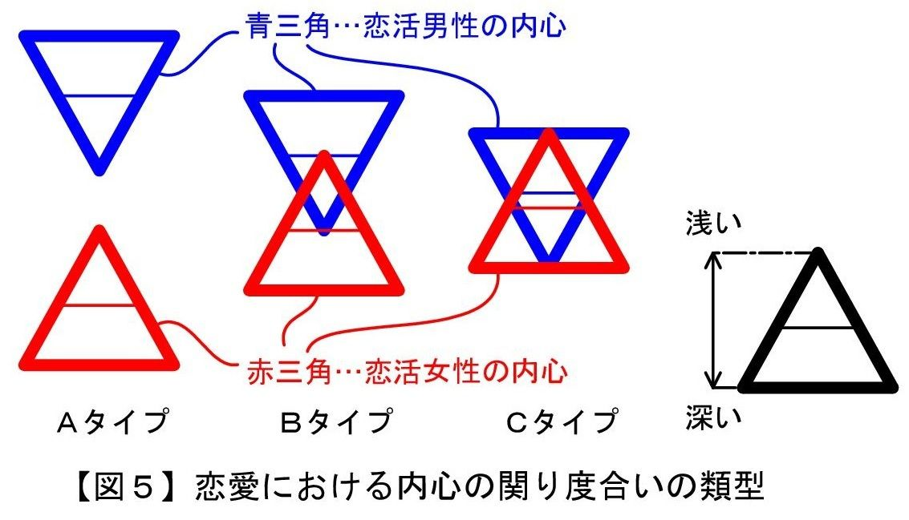
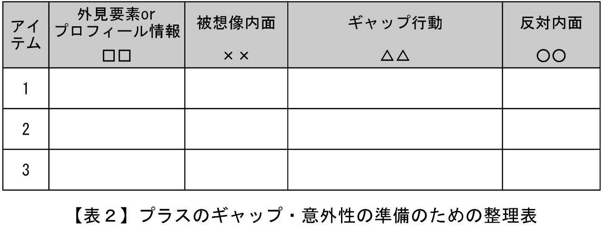
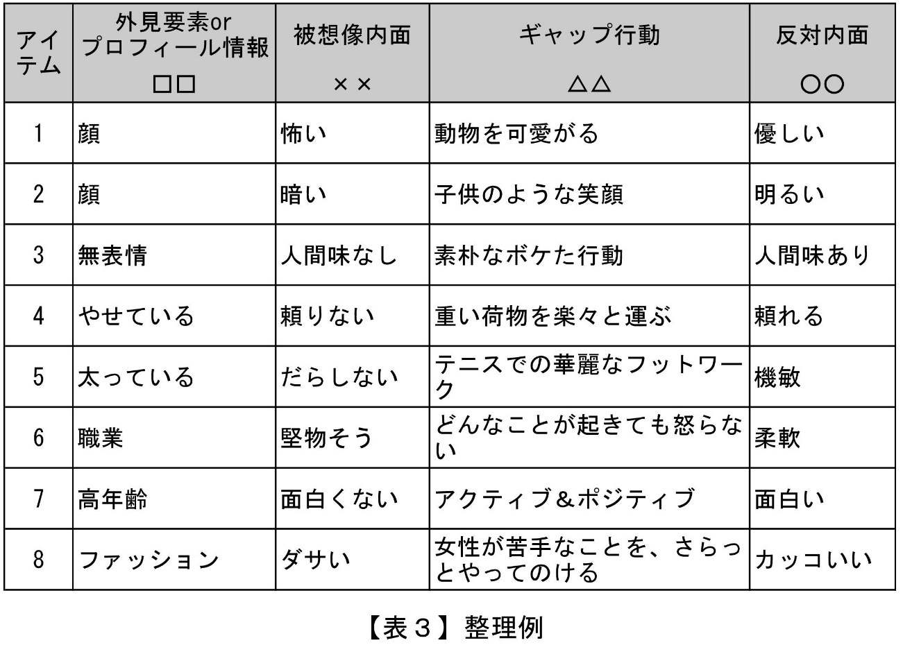

| ＜実態解明型＞恋活前のセルフチェック２【恋人候補→恋人編】後編: 意中の30歳以上の女性から恋人に選ばれるために Luff up (Passlead Lab) | |
| 深沢 涼 & 植松 優奈 | |
| pasurido (2015) | |
目次
＜ 実態解明型＞ 恋活前のセルフチェック２【恋人候補→恋人編】後編
■恋活女性に"頑張ってくれている感"を抱かせるものは、恋活男性の"行動"
■時間や労力をかける対象や内容は、「恋活女性が必要性を感じるもの」
■恋人成立に拍車をかける要素であり、どの男性でも簡単に具備可能
■「一途さ」と「私のために頑張ってくれている感」とは全く別物
■相手の恋活女性に「さりげない気遣いをされた」と感じさせる行動例
■生涯、恋人を"能動女性"に限定するなら、具備する必要は無いが・・・
■「過去に恋活女性から聞いて理解した"恋活女性の興味事"であって、かつ、自分も楽しめそうなもの」を、必ず提案内容に含めること
■"恋活男性の興味事"を提案する際には、なるべく相手の恋活女性も楽しめそうなものを提案すると共に、恋活女性が楽しめる理由を付言すること
＜ 実態解明型＞ 恋活前のセルフチェック２【恋人候補→恋人編】後編
◆リンク用語の再掲
前編で用いた用語のうち、後編にてリンクを用いているものについて、以下に、用語の定義を再掲させて頂きます。
本書では、30歳以上の恋活女性のうち、「恋活男性が意中とする恋活女性」のことを、恋活男性にモテる女性であるという意味合いで" モテ女性"という用語で表すことがあります。
「 進行阻害要因」とは、意中の恋活女性のプライベート領域において、恋活男性がゴールである"恋人"に向かって進んでいくことを阻害する要因（＝行動、その行動を支える内面要素） を意味するものであり、恋活男性にとって「ブレーキ」として機能します。
進行阻害要因には、次のA、Bの２種類があります。
A．必須内面要素の不足
一般的に恋人であれば備えるべき内面要素（以下、「必須内面要素」といいます）が不足している。
B．アウト内面要素の存在
一般的に恋人には備えていて欲しくない内面要素（以下、「アウト内面要素」といいます）を備えている。
「 進行促進要因」とは、意中の恋活女性のプライベート領域において、恋活男性がゴールである"恋人"に向かって進んでいくことを促進する要因（＝行動、その行動を支える内面要素） を意味するものであり、恋活男性にとって「アクセル」として機能します。
「 価値観」は、物事の価値に対する考え方であり、継続的に関わっていく他人に対して必要に応じて露出される性質をもっています（前編図３を参照）。
「 内心」は、心に秘めた気持ちであり、他人に露出することが予定されておらず、他人とは言えないような特別な人（例えば、恋人のような心の距離の近い人）に限って露出される性質をもっています（前編図３を参照）。
第４章 恋活前セルフチェック【恋人版】
【第３節】進行阻害要因（アウト内面要素の存在）のチェック
第３節では、進行阻害要因 となる内面要素のうちのアウト 内面要素 （一般的に恋人には備えていて欲しくない内面要素）、即ち、「その存在を理由として、"恋人にする許容性無し"の評価がなされる 可能性が高い内面要素」を列挙していきます。
列挙したは、次の５つになります。
１．隠れたネガティブ内面要素の露呈
２．恋活女性を蔑む自己主張→独善的・自己中心的
３．自己の価値観 の押し付け→オレ様、管理・監視主義
４．期待を抱かせる発言と言行不一致の繰り返し→欺瞞
５．軽過ぎる行動、重過ぎる行動→物足りなさ、息苦しさ
それでは、順に説明していきます。
１．隠れたネガティブ内面要素の露呈
恋活女性が、恋人候補の恋活男性の行動のうちで最も恋人としてアウトであると感じるものは、「隠れたネガティブ内面要素の露呈」です。ネガティブ内面要素とは、これが露呈した場合には、恋活女性から即座に"恋人候補から除外"の評価（＝空間を共にしたくない 前編図１を参照）がなされる可能性が高い、いわば門前払いに等しい要素です。よって、この行動がなされることにより、恋活女性は、「恋人候補にする前に露呈されていれば、恋人候補に選ばなかった」 と感じ、「全くの思い違いだったので、恋人にするのをやめた」という判断をしてしまうのです。
実際の恋活現場においては、「恋活女性が恋活男性のネガティブ内面要素の存在に気づかずに恋人候補に選んでしまい、その後にネガティブ内面要素が露呈される」というケース も少なからず起きていることから、本書ののトップに記載しております。
30歳以上の恋活女性が恋活男性を恋人候補にした後に発見しがちなネガティブ内面要素としては、様々なものがありますが、本書では代表的なもの５つを以下に列挙します。この５つは、いずれも、「一般的に、30歳以上の女性から見た時に、若い時なら許されても、30歳以上の男性では許されない」 という性質のものです。恋活をされている読者の皆様にとっては当たり前的な要素がほとんどだと思いますので、簡単にポイントのみを説明致します。
（１）食べ方が汚い
■問題となる行動例
汚い食べ方には様々なものがありますが、特にＮＧ度合いの高いものは、次の３つです。
・口に入れた食べ物をこぼしたり飛ばしたりする。
・口の中に食べ物を入れて噛む際に、くちゃくちゃ音を立てる。
・犬のように、テーブルの上に置いてある皿に顔を近づけて食べる。
なお、同じ音でも、ワイルドにラーメンをすする音等は、ＮＧではなく、むしろ、恋活女性によっては、男っぽさがあるとして好感を持たれる場合があります。
■進行阻害要因となる理由
「食べ方が汚い男性は、女性の恋人選びに際して敬遠される。」
このことは、今も昔も変わっていません。
「外見や内面がピンポイントであっても、食べ方が汚いならＮＧ」
恋活女性のほとんどの方は、恋人としての男性の食べ方の汚さを、これほどまでに嫌っています。「下品」、「育ちが悪い」、「みっともない」と感じる方はまだいい方で、「生理的に受け付けない」という感を持つ恋活女性も多数いらっしゃいます。
結婚目的や支援目的の女性であれば、生活の安定や財物の提供等の恩恵を受けるトレードオフとして、我慢する、気にしないようにする、食事をしている姿を見ないようにする等の自己対処をすることが可能です。しかし、恋愛目的の女性の場合には、「一緒に食事をしているところを他人に見られる」ということを意識しているため、「一緒に食事をしているところを他人に見られたら、恥ずかしいし、自分まで育ちが悪いように思われる」と感じてしまうのです。
また、外で食事を一緒にとることは、恋人として付き合っていく上で、とても頻度が多く、かつ、避けられないものです。恋活女性の立場に立てば、デートの都度、相手の恋活男性に対する不快感や恥ずかしさを抱くような恋活男性とは、お付き合いしたくないと思いますよね。
■充足するための方法
これは、私が自分の子供に躾けてきた方法なのですが・・・、" 問題となる行動例 " のような食べ方をしないようにするためには、
●お皿に手を添えて食べる。
●一度に口に入れる量を少量にする。
●口の中のものがなくなってから（例えば、水を飲んだ後に）、しゃべる
この３つを習慣づけるだけで、かなり防げるのではないかと思います。
加えて、"問題となる行動例" には示しませんでしたが、喫茶店での冷たい飲み物の飲み方に関し、以下の２つの飲み方は、少なくとも恋人候補の恋活女性の前では、止めた方が良いと思います。
・喫茶店で、氷が溶けて薄まった残り少ない飲み物を、グラスを逆さにして、すする音を立てながら飲み干す。
・喫茶店で、グラスの中に残っている氷を噛んで食べる。
これらの飲み方は、長時間喫茶店にいると、手持ち無沙汰になった時に、ついつい無意識にやってしまいがちです。
恋活女性は、相手の恋活男性にこのような飲み方をされた場合、デリカシーの無い音が生じることから、一緒にいることを恥ずかしいと思う場合があります。また、このような飲み方は、物に対する異常な執着心を持っていると思われてしまうこともありますので、お互いのや内心が理解できていない初期段階では、止めておくことが賢明であると思います。
このような些細なことで恋人候補止まりになってしまうのはとても勿体ないことなので、このような飲み方の癖がある方は、恋人候補の段階では、喫茶店において、温かい飲み物をオーダーする、最初の飲み物が無くなったら、すぐに次の飲み物をオーダーする等の癖が出ないような工夫をされてみることをお勧めします。
（２）マナーが悪過ぎる
■問題となる行動例
マナーの悪さには、様々なものがありますが、特に悪過ぎるものとしてＮＧ度合いが高いものは、次の３つです。
恋活女性と一緒にいる時に、
・道路にゴミを捨てる。車の窓からゴミを捨てる。
・公共物を壊す。
・店員等に怒鳴る。
読者のほとんどの方は、「こんなことする男性、本当にいるの？」と驚かれたことと思います。しかし、男性の中には、普段の男性同士の付き合いにおいてはとても品行方正だけれども、恋人だけには真逆の粗暴な内面を曝す方が現実に存在しているのです。
■進行阻害要因となる理由
" 問題となる行動例 " の各行為について、恋活女性が問題視しているのは、「恋活男性のマナーの悪い行為が、恋活女性以外の第三者を巻き込んでいる 」という点です。道路も公共物も店員も、恋活男性や恋活女性の所有物ではないので、これらを汚したり傷つけたりする恋活男性の行為は社会的に非難 されてしまいます。しかも、これらの行為が恋活女性と一緒にいる時になされることで、これらの行為がなされているところを見た周りの方々から、恋活女性も恋活男性と同類とみなされ、恋活男性と同様に避難されてしまいます。恋活女性の立場に立てば、デートの都度、自分を非難の対象に巻き込むような恋活男性とは、お付き合いしたくないと思いますよね。
■充足するための方法
恋人の前でだけ粗暴になる恋活男性の行為は、ある意味カルマ的なものですので、この行為自体をしないようにすることは難しいことであると思います。また、こうした行為を二人の間においては理解し許容してくれる恋活女性も存在していると思いますし。
しかしながら、こうした粗暴な行為を公然と外ですることについては、女性は、一般的に、社会に迷惑をかけてはならないというモラル感が男性よりも強いので、許容する恋活女性はほとんどいないと思います。特に、恋人候補というお互いの理解が半ばの段階では、こうした行為を外ではしないように留意することが恋活男性にとって得策であると思います。
（３）デート代にまつわること
恋愛には、会って一緒に時間を過ごすためのお金であるデート代（注： デート中に男性や女性が個人的にする買い物の代金は含まれません）が必要になります。このデート代として、必要最小限の額がいくらなのか、割り勘でも構わないのか・・・ということについては、恋活女性によって考え方がまちまちです。よって、「恋活女性の希望する額のデート代を、全額負担を前提として準備する」ということについては、恋活女性から恋活男性に求められる必須事項ではありません。
ほとんどの恋活女性がデート代に関してネガティブになるのは、デート代としてのお金の額ではなく、恋活男性がデート代としてのお金を使う時のネガティブな心理状態やその心理状態が表れた行為 なのです。こうした行為の代表的なものを、次の"問題となる行動例"にて列挙してみます。
■問題となる行動例
（ａ）デート代として使うお金が「自分が自由に使えるお金」ではない。
「自分が自由に使えるお金」ではないものの具体例としては、次のものがあります。
・家族に渡す分の生活費等の他への支払いが予定されている現金
・家族に管理されているクレジットカード
・会社から仕事のために借りた前借金
（ｂ）デート代の会計の際、お金の手離れが悪く、支払い方がスムーズでない。
【具体例】
・映画館や水族館、ホテル等に入ろうとしている時に、入口付近で「どうしたら安く入れるか」についてコスト検討をし始め、なかなか入ろうとしない。
・お店での会計の際、恋人や嫁でもないのに「端数のお金を出して」と要求する。
（ｃ）上記 （ｂ） で手が離れたお金に対して執着する態度を示す。
【具体例】
・店で食事や買い物を済ませた後に、「値段が高かった」、「値段の割に不味かった」ということについて執拗に文句を言う。
（ｄ）デート代等を負担した見返りを要求する。
【具体例】
・「デート代を負担したのだから、セックスさせろorプレゼントを買えor負担したデート代の半額を支払え」と解釈される態度を示す。また、デート代の負担に加えて、「どこへ行くにも車で送り迎えしていた」という理由を付け足す。
■進行阻害要因となる理由と充足するための方法
" 問題となる行動例 " のような恋活男性の行為に対して恋活女性がネガティブ感を抱いてしまう理由については、された恋活女性の立場や気持ちになってみれば、おそらく、説明しなくてもお分かりになるのではと思います。以下、（ａ）から（ｄ）に分けて説明していきます。
☆ （ａ）について
上記（ａ） の「デート代として使うお金が"自分が自由に使えるお金"ではない。」という行動例については、このような "使い込み"による資金の捻出は、決して長く続くものではないため、恋活女性は、男としての不甲斐なさを感じると共に、この先のお付き合いの継続性について不安を抱くため、好きになることを止めてしまいます。
恋活女性の中には、恋活男性の自由になるお金の額やその額が少ない理由について納得することができれば、快く、割り勘にしたり、お金がかからずに楽しめるデートプランにしたり等の配慮をしてくれる方も少なからず存在しています。このような恋活女性にターゲットを絞り、自分が自由に使えるお金の詳細について、恋活女性に対し、なるべく早い段階で素直に打ち明け、お金について無理しない付き合い方をすることをお勧めします。
なお、読者の皆様の中には、「そんなことは綺麗ごとや理想論であり、過去の実経験においては、デートで使えるお金の額が少ないことが、恋活女性からの不満の種や別れる理由になっている。」と仰る方もいらっしゃるかもしれません。
近年の30歳以上の女性は、そのほとんどの方が「いざとなったら社会に出て自分が生活するだけの金を稼げる」ということを認識しています。故に、恋愛相手となる男性に対しては、同様の認識を持って社会で実際に働いて稼いでいることを、恋愛市場に出るために具備すべき必須条件として求めています（詳しくは、私の別著である「恋活前のセルフチェック１ 【知人→恋人候補編】」 をご参照下さい）。このような女性と男性の組み合わせである場合には、恋愛目的（注： 支援目的は含みません）の恋活女性は、相手の恋活男性の自由に使えるお金の額が少ないことのみをもって、恋人候補から除外又は対象外としたり、として認定したりすることは、まず、ありません。恋活女性が恋人に求めているのは、「自分にかけてくれるお金」ではなく、「自分にかけてくれる気持ちと時間」なのですから。
よって、過去の経験から「デートで使うお金の額が少ないことが、恋活女性からの不満の種や別れる理由になっている。」ということを感じられている読者の方のうち、今後、支援目的の女性との付き合いではなく、恋愛目的の女性との恋人関係の実現を望まれている方は、この機会に、本書のや進行促進要因 への該当性や、私の別著である「恋活前のセルフチェック１ 【知人→恋人候補編】」 に記載されているネガティブ要因やどこにでもいる要因への該当性について自己点検して、自己の外見要素や内面要素に磨きをかけておくことを、強くお勧めします。恋活女性は、相手の恋活男性に対し、これらの要因をクリアしている度合いが高いほど、デート代の額や負担について気にする度合いは低下する（換言すれば、クリア度合いの高い男性なら、自分がある程度お金を負担してでも、恋人として付き合っていきたいと思う）ものですので。
☆ （ｂ）について
家計を共にしている男女関係（例えば、結婚等により実質的な生活を共にしている関係）である場合には、女性にとって男性の持っているお金は、"実質的には共有の財産"と評価されます。このような場合には、（ｂ） の「デート代の会計の際、お金の手離れが悪く、支払い方がスムーズでない。」という男性の行動は、女性にとって「女性自身のお金を使う価値があるかどうかを吟味してくれている行為」であり、何ら問題なく、むしろ褒められる行為になります。
しかしながら、互いに恋人候補のような家計を共にしていない男女関係の場合には、（ｂ） のような恋活男性の行動は、恋活女性から見て、「私に対してお金を使う価値があるかどうかを吟味している行為」にしか映りません。よって、デート代の会計の際におけるお金の手離れの悪さを見た恋活女性は、「この男性は"私にお金を使う価値が無い"と考えている」 のように感じてしまいます。例えば、日常生活において、ある商品Ｆを買い物する際に、「商品Ｆのデザインや機能がたいしたことないから、値札通りの金額では買わないor値札の金額の何割引きだったら買ってもいいor端数を値引きしてくれるなら買ってもいい」という場面があると思います。恋活女性は、（ｂ） の男性の行動を見て、「自分がその商品Ｆと同様に扱われている」のように感じてしまうのです。男性・女性を問わず、相手に自分自身の価値を安く見積もられたら、その相手と付き合っていく気持ちが萎えてしまいますよね。
よって、恋活男性は、恋人候補の段階では、相手の恋活女性の目の前では（ｂ） のような行動を控え、「デート代のコスト検討は、恋活女性の見ていないところで、デート前に十分にしておき、デートの際にはサッとスムーズに支払う」 ということを実践していきましょう。このようなスムーズさがあれば、たとえ会計の際にクーポンを利用しても、恋活女性の評価を下げることにはなりませんので。
☆ （ｃ）について
（ｃ） の「手が離れたお金に対して執着する態度を示す。」という行動例が進行阻害要因となる理由は、（ｂ） とほぼ同様です。即ち、互いに恋人候補のような家計を共にしていない男女関係の場合には、（ｃ） のような恋活男性の行動は、恋活女性から見て、「男性が自身のお金を使った価値を否定している行為」にしか映りません。よって、デート代として手が離れたお金に対して執着する態度を見た恋活女性は、「この男性は、私にお金を使ったけれども、実は"使う価値が無かった"と後悔している」 のように感じてしまいます。例えば、日常生活において、ある商品Ｆを買った後に、「使ってみたら、使い心地が悪かったので、買ったことを後悔している」という場面があると思います。恋活女性は、（ｃ） の男性の行動を見て、「自分がその商品Ｆと同様に扱われている」のように感じてしまうのです。男性・女性を問わず、相手に自分自身の価値を否定されたら、その相手と付き合っていく気持ちが萎えてしまいますよね。
よって、恋活男性は、恋人候補の段階では、相手の恋活女性の目の前では（ｃ） のような行動を控え、「デート代として一度支払ったお金については、後悔の弁を述べない」ということを実践していきましょう。
☆ （ｄ）について
（ｄ） の「デート代等を負担した見返りを要求する。」ということについては、読者の方の中にも同様の考え方をされる方が少なからずいらっしゃるのではないかと察します。デートには、男性・女性共に時間を消費しますが、デート代という金銭や相手の恋活女性の送り迎え等の労務については、女性はあまり消費せず、その分男性が消費の主体となるケースが一般的です。一日デートの場合、普通に二人で楽しく過ごすためには、最低でも１万円くらいの金銭の消費を伴うものです。よって、「意中の恋活女性から恋人候補に選んでもらい、その後、その恋活女性と５回デートしたけど、結局、恋人には選んでもらえなかった。」というような場合には、恋活男性は、「５万円支払ったけど、意中の恋人を手に入れられなかった。」という結果が残ります。更に、５回のデートの度に恋活女性を送り迎えしていたのなら、その労務分を含めると、６〜７万円くらい支払った感覚になります。
しかし、このような「デート代等を負担した見返りを要求する。」という考え方は、逆の立場になって考えてみると、的を得ていないことが良くわかります。仮に、「貴男が、恋人候補としての恋活女性と、デート代の全額を恋活女性が負担して５回デートしたけど、結局、恋人には選ばなかった。」というような場合に、その恋活女性から「デート代計５万円支払ったので、その分、セックスして下さい。」と言われたとしたら、貴男は「はい、そうですね。」とは答えないと思います。もし「はい、そうですね。」と答えたとすれば、相手の恋活女性のことを、"恋人候補"ではなく、"性処理対象"として選んでいたことになります。
よって、恋活男性は、恋愛の実現を目指すのであれば、（ｄ） のような考え方を消し去り、相手の恋活女性に対するデート代の全額支払いや送り迎えについては、「したいと思うのなら、見返りなしにする。見返りなしではしたくないのなら、しない。」 のようなはっきりとしたスタンスで臨むことが、恋活男性及び恋活女性の双方にとって望ましいと考えます。
相手の恋活女性が恋人選びに慎重な人である場合や、恋活男性が自らの内面要素の良さを出せるようになるまでに時間がかかる人である場合等には、何回もデートしたけど恋人になれなかったということが生じ得ます。このような場合には、恋活男性と恋活女性との間で事情を話し合って、「恋人になるまでは、デート代は割り勘にする」と決めることも、お互いに恋人候補の期間を焦らずにゆったりとした気持ちで過ごすことができる点で、良案の一つであると思います。
（４）粘着性
1999年の雇用機会均等法の改正以降、戦後の男尊女卑的な考え方は、徐々に風化しつつあります。こうした影響を受けて、近年のわが国では、「男らしさ」の定義も従来のものとは変わってきており、男性には、従来からの"力強さ"や"タフさ"のみならず、女性の立場に立った細やかな視点や家事労働等も当然に求められるようになってきました。
但し、このように「男らしさ」の定義は変わっても、「細か過ぎ、しつこい、妬み、陰湿等のような粘着性」 という要素については、今も昔も変わらず、世間では「男らしくないこと」 として扱われており、恋愛の場面においても、女性が男性について最も嫌う性質の１つになっています。
一方、現在の恋愛市場では、私と懇意にしている多数の恋活女性の実経験に鑑みると、粘着質の恋活男性の割合が明らかに増加傾向にあります。これは、前編第１章において恋愛市場の傾向として既述した「勝ち組男性への集中化」という傾向が多分に影響しているものと思われます。即ち、勝ち組に入れない恋活男性は、「恋愛を求めて意中の恋活女性と出会う度に、最終的に恋人には選ばれない」という残念な結果を何度も繰り返すことになります。このような残念な結果を繰り返していると、誰でもそうですが、「残念な結果の原因が自分の魅力の無さにあるとは認めたくない」という自己擁護の気持ちが働きます。自己擁護するための最も簡単な方法は、相手の考え方や行動を責めて、「相手が悪い（自分は悪くない）」という結論を導くことです。この方法を用いて、勝ち組に入れない恋活男性は、自分のことを恋人候補に選んでおきながら恋人に選ぼうとしない恋活女性に対し、恋活女性の考え方や行動を責めてしまうことがあるのです。実際の恋活女性からのレポートにおいても、「相手の恋活男性は、恋人候補に選んだ時には爽やかな人だなと思ったけど、私の恋心の発展があり得ないことを察知した途端に粘着性を露呈するようになった。このようなことを、１人だけではなく、様々な恋活男性との間で経験した。」という内容のものが、頻繁に確認されています。
■問題となる行動例
「細か過ぎ、しつこい、妬み、陰湿等のような粘着性」には様々なものがありますが、特に発生頻度が高くかつＮＧ度合いが高いものは、次の２つです。
・次の（イ）から（ニ）のような恋活女性の対応について、恋活男性が、「恋人候補に選んでその気にさせておきながら、非常識であり、不誠実である。」という内容のメールを恋活女性に送り、恋活女性の対応の酷さを責める。
（イ）恋活女性からのメールの返信が少なくなったこと
（ロ）恋活女性からのメールの返信内容が表面的・形式的になったこと
（ハ）恋活女性がなかなかデートの約束に応じてくれないこと
（ニ）恋活女性がセックス等の身体的接触を拒否すること
・上記のように責めた後に恋活女性の対応が改善しなかった時に、恋活男性が恋活女性に対し、「恋活女性との写真やメール、交際の事実を第三者に暴露するぞ」と脅す等の脅迫行為や、執拗にメールの送信や電話をし続ける等のような嫌がらせ行為をする。
このような恋活男性の行為は、「ＳＮＳ等の匿名的な出会い手段で出会った男性で、相手の恋活女性に真実の個人情報を明かさない男性」に多く見受けられます。
読者のほとんどの方は、「こんなことする男性、本当にいるの？」と驚かれたことと思います。しかし、男性の中には、普段の付き合いにおいてはとても爽やかで良い人だけれども、自分の思い通りにならないことが生じると、自分のプライドを守るために、思い通りにならない要因となる人を非難してその人の価値を下げようとする方が現実に存在しているのです。このような恋活男性は、恋愛だけではなく、仕事においても同様の傾向が見られます。
■進行阻害要因となる理由と充足するための方法
"問題となる行動例 " に記載した各行為は、された側の立場に立てば、迷惑、不快、恐怖を感じるものであることは明白ですね。
恋人候補や恋人という関係は、結婚や愛人のような契約関係ではありません。従って、人は、ある他人を恋人候補に選んだからといって、その他人と付き合い続ける義務やその他人を恋人にする義務は無く、自身の自由な意思のみで、その他人を恋人候補から外したり恋人関係を解消したりすることができます。"問題となる行動例" に記載した各行為に心当たりのある方は、まずは、このような「意思決定の自由」が恋愛の大前提であることを改めて理解して頂ければと思います。
■該当しない方にとっての留意点
この粘着性という内面要素については、おそらく読者の皆様のほとんどの方が無縁であると思いますが、そのような無縁な男性の方にも留意して頂きたいことがあります。
それは、「恋愛市場においては、相手の恋活男性の粘着性を疑う恋活女性の数が増えている」ということです。
近年、ＳＮＳ等の匿名的な出会い手段は、男女問わず、一般層の方にも広く利用されるようになってきています。女性の場合、「このような出会い手段を利用した経験がある」ということを堂々と第三者に話せるまでには一般化していませんが、実際に利用経験をした女性の数は、ここ数年の間に急激に増加しています。他方、このような出会い手段では、相手の恋活女性に真実の個人情報を明かさずに付き合おうとする恋活男性が、その割合は年々減少してはいるものの、いまなお相当な割合で存在しています。
このことは、実際に相手の恋活男性から"問題となる行動例" をされた恋活女性の数が増えていること、恋活女性一人当たりにおいて"問題となる行動例" をする恋活男性に出会った数が増えていることを意味します。
恋活男性の持つ粘着性は、出会いの初期のようなお互いがお互いを求め合う段階では露呈されず、恋活男性が「自分が恋活女性を求めているレベルよりも相手の恋活女性が自分を求めているレベルの方が小さい」という劣位を感じる状況になって初めて露呈されるものです。よって、恋活女性は、相手の恋活男性が粘着性を持っているか否かを出会いの初期の段階で見抜くことは難しく、相手の恋活男性の基本的な外見要素や内面要素に問題が無ければ、その恋活男性を恋人候補に選びます。その後、恋活女性は、恋人候補に選んだ恋活男性のことを「恋人としては何か違うかな・・・」と思った場合には、その後、恋活男性に対して積極的に連絡をしなくなります。このような現象に直面した場合、普通の恋活男性であれば、「脈が無い」ということを察してフェードアウトしながら身を引く対応をするのですが、粘着性を持ち、かつ、相手の恋活女性に真実の個人情報を明かさずに付き合おうとする恋活男性の場合には、「聞いていない」という逆切れモードで、恋活女性に対し"問題となる行動例" のような行動に出ます。このような行動の裏側には、「自分の個人情報を知らない相手に対しては、何をしても自分に不利益は生じないから、相手に不満をぶつけてやれ」のような、匿名の電子掲示板と同様の心理状態が誘発されているのです。
よって、今後の恋活に際して、これから皆様が出会う恋活女性（特に、モテ女性 ）は、次のように疑心暗鬼になっていると考えておいてください。
・ＳＮＳ等の匿名的な出会い手段で出会った恋活男性に対しては、「もしかしたら、粘着性を持っているのではないか？」
・職場等のリアルコミュニティでの出会い手段で出会った恋活男性に対しては、「この恋活男性は、自分の個人情報がバレているから粘着性を露呈しないだけで、もし自分の個人情報がバレていなかったら粘着性を露呈するような人なのではないか？」
加えて、このような恋活女性の疑心暗鬼を解消するためには、前編第４章第２節「進行阻害要因（必須内面要素 の不足）のチェック」において列挙した内面要素のうち、次の３つの内面要素を充足することが極めて重要である、ということを認識しておいてください。
・２．必要なプライバシー情報の開示→誠実さ
・４．価値観の露出→人間性
・５．内心の露出→人間味
（５）内弁慶的な豹変
■問題となる行動例
・普段はとても大人しいのに、アルコール飲料を飲むと暴力的・支配的になる。
・他人の面前では何も文句を言えない人が、メールになると他人に対して激しい文句を書く。
■進行阻害要因となる理由
" 問題となる行動例 " に記載した行為は、恋活女性と恋活男性が共にこのような行為をする人同士である場合には、全く問題にならず、にはなりません。
一方、恋活女性が"問題となる行動例" のような行為をしない人である場合には、そのような行為を恋活男性がした場合に、その意図やメカニズムが理解できず、一緒にいること自体に恐怖を感じてしまいます。このことは、逆の立場になれば、容易に理解できることと思います。
思うに、"内弁慶"という自己を抑制する因子は、程度の差はあるものの、誰もが備えているものです。よって、恋活女性は、"内弁慶"ということ自体をと考えている訳ではありません。恋活女性が問題視しているのは、「何かをきっかけにして自己の抑制が働かなくなる」 ということです。恋活女性は、30歳以上の恋活男性を、「どんなことが起きても自己を抑制することができる理性」を備えた大人の男性と見ています。よって、恋活女性は、このような理性を備えていないことが恋活男性によって露呈されると、30歳以上であるにも拘わらず精神的には子供同然であると感じ、大人の恋愛の対象から除外してしまう のです。
■充足するための方法
内弁慶的な豹変の原因には、主として、
・一時的なストレス、プライベートと仕事との混同等によってプライベートにおける自己抑制ができなくなっているだけもの
と、
・トラウマ等に起因した根深い恒久的なもの
とがあります。
事例として圧倒的に多いのは前者 です。
前者 の場合には、「ストレスを恋愛で解消しようと考えず、スポーツや趣味等でストレスを解消してから恋活に臨む」、「プライベートの場面では仕事での価値判断を持ち出さないように意識する」等により、内弁慶的な豹変の露出が防止され、恋活女性とのデートの場面では終始穏やかな雰囲気にすることができます。特に、前者の場合には、恋活男性の年齢が高くなるほど自覚症状が無いことが多い ものです。ご自身で心当たりのある方は、恋活での無駄な失敗を繰り返さないためにも、まずは、私の別著である「恋活前のセルフチェック１ 【知人→恋人候補編】」 をお読み頂き、恋愛に臨むために必要不可欠な内面要素について、今一度、ご自身にリマインドして頂くことをお勧めします。
後者 の場合には、少々選択肢は狭くなりますが、相手の恋活女性を選ぶ段階で、自分と同じような因子を持っている恋活女性を恋人候補に選ぶことをお勧めします。その方が、内弁慶的な豹変の要因となる出来事が二人の間の共感要素となることから、恋人になった後においても二人の関係が安定して長く続くと思いますので。
２．恋活女性を蔑む自己主張→独善的・自己中心的
恋活女性が、恋人候補の恋活男性の行動のうちで二番目に恋人としてアウトであると感じるものは、「恋活女性を蔑む自己主張」です。
この行動がなされることにより、恋活女性は、"独善的・自己中心的"という恋人として備えていて欲しくない内面要素を持っていると感じ、「恋人候補かなと思ったけど、私のことを認めてもらえそうにないから、恋人にするのをやめた」という判断をしてしまうのです。
「恋活女性を蔑む自己主張」とは、恋活男性が、自分の考えや判断、言動、行動のみが正しいということを、恋活女性に対して積極的又は消極的に主張する行為です。このような行為を受けた恋活女性は、必然的に、「この恋活男性は、私の考えや判断、言動、行動を、無視している、価値が無いものと思っている、見下している、否定している・・・」のような蔑まれた感を抱きます。
思うに、昭和の時代においては、社会一般に男尊女卑的なが蔓延していたことから、女性は、恋人である男性の考えや言動、行動を、たとえ間違っていても「正しい」と思うようにして受け入れていました。1999年の雇用機会均等法の改正から16年余を経た現在、このような受け入れの慣習は、一部の職場や家庭内においては依然として根強く残存しているものの、恋愛関係においてはほぼ消滅しています。よって、現代の恋愛場面において、恋活女性を蔑む自己主張をする恋活男性は、恋活女性から、たちまち、「時代錯誤」、「考えや判断、言動、行動が合わず、恋人として共に時間を過ごせない」 のように一刀両断されてしまうのです。
この「恋活女性を蔑む自己主張」 をのうちで二番目に重要なものとして挙げた理由は２つあります。
１つ目の理由は、この要素を理由に恋活女性が恋活男性を恋人候補から外す事例が非常に多く、特にがほぼ確実に敬遠するものであるからです。
２つ目の理由は、この要素は恋活男性に自覚の無い場合が多い 、即ち、恋活男性の言動や行動が、恋活男性自身が相手の恋活女性を蔑むつもりでしていなくても、恋活女性に蔑むようにとられてしまっていることが多いからです。
「恋活女性を蔑む自己主張」 という要素は、社会経験を重ねるほど備わってしまいがちなものです。現在の恋愛市場で生じている「恋活女性（特に）の年下男性嗜好」の傾向は、恋活女性の「歳を取っている恋活男性は、恋活女性を蔑む自己主張が激しそうだから、積極的に恋人に選ぶのは止めておこう」というマインドに起因しているものではないかと私は分析しています。
よって、「意中の恋活女性を恋人にしたい（恋活女性なら誰でも良い訳ではない）」と思っている恋活男性にとっては、この 「恋活女性を蔑む自己主張」 という要素を無くすことは、不可欠にマスターすべき事項であると考えます。
■問題となる行動例
読者の皆様は、「自己主張」や「恋活女性を蔑む」という言葉から、「恋活女性を責めるような暴言」のような明らかに自己中心的な言動や行動を想像されるかもしれません。もちろん、そのような自己を積極的に主張する言動や行動も含まれるのですが、そのような言動や行動については、恋活女性を不快にさせてしまうことは自明ですので、ここでは例として記載致しません。
ここでは、相手の恋活女性を蔑むつもりでしていなくても、恋活女性に蔑むようにとられてしまっている言動や行動を例として記載致します。ものすごく些細なことであることを実感して下さい。
Ａ．恋活男性の言動によるもの
「私は、○○に関して、□□のような考え方を持っています。」に続けて、「このような考え方は当たり前だと思います。」や「このような考え方を持っていない人は、変だと思います。」のような言動をした場合
Ｂ．恋活男性の行動によるもの
・対面して話をする時であるにも拘わらず、ずっと携帯電話で何かを見ている。
・しきりに時間を気にする。
・隣でイライラされる。
・思い通りにならかったり、注意されたりすると、嫌な顔をしたり、キレたりする
■進行阻害要因となる理由
" 問題となる行動例 " を読んでみて、「そんな些細なこと・・・」のように感じた読者の方もいらっしゃるのではと察します。
しかし、このような言動や行動を受けた恋活女性の立場に立ってみれば、恋活女性が蔑まれた感を抱いてしまうことは、容易に想像できると思います。もし貴男が" 問題となる行動例 " のような言動や行動を意中の恋活女性から受けたら、自分のことをないがしろにされていると感じますよね。
「 Ｂ． 恋活男性の行動によるもの 」 に列挙した各事例 は、そもそも対人マナーに反するものですので、その悪さについては理解しやすいと思います。このような行動をされると、恋活女性は、恋活男性にシャットアウトされたように感じ、自らの意思で次の行動をとることに委縮してしまいます。このような行動は、恋活男性自身としては、積極的に自己主張している訳ではなく、本能に従って出てしまった行動に過ぎないかもしれません。しかしながら、このような行動に直面した恋活女性にとっては、恋活男性から「貴女がどう思おうが、自分の行動は正しい」のような自己主張をされているように感じてしまうのです。
更に、「思い通りにならかったり、注意されたりすると、嫌な顔をしたり、キレたりする」という行動例は、相手の恋活女性に、「自己主張が通らないと、感情的になり、大人として冷静に対応できない」、「独善的（＝自分のみが正しい）のみならず、利己的（自分さえよければ、それでいい）で、子供同然である」と感じ取られ、「このような恋活男性とは大人の恋愛を実現することはできない」と判断されてしまいます。
他方、「 Ａ． 恋活男性の言動によるもの」 に記載した事例 の場合には、恋活男性は、「自分の考えのみが正しい」という発言したわけではなく、自分の考えについて「当たり前だと思います。」や「このような考え方を持っていない人は、変だと思います。」と発言したに過ぎません。しかし、このような発言は、相手の恋活女性に、「他の考えを受け入れる余地が無い →自分の考えのみが正しいと主張している」のように取られてしまうのです。
更に、こうした恋活男性の言動を聞いた恋活女性は、「私の考えは、その恋活男性の考えとは異なる」と思った場合であっても、そのまま自分の考えを発言すると「当たり前ではない」、「変だ」のように恋活男性から酷評されてしまうことが予想されるため、自分の考えを発言することに委縮してしまいます。このような些細なことから、恋活女性は、「この恋活男性との間では、私の素を出したコミュニケーションが成立しない。 よって、この恋活男性に、私のを理解してもらうことは到底できない。」と一気にネガティブな判断をしてしまいがちなのです。
思うに、相手に対して自分の考えが絶対的である旨を主張する癖のある男性は、その主張をした後にその考えが間違っていたことがわかると、その相手に対し、笑いながら「失礼しました」と一言言っただけで何事も無かったかのように終わりにしてしまう方がほとんどです。もし仮に、この男性が「自分の考えが絶対的である旨の主張によって、相手を委縮させ、以降、相手の表現の自由を奪い、ブルーな気持ちにさせてしまった」ということを思い浮かべられたのであれば、このような軽い謝罪で済ませようとは思わないはずです。このような「発言を受けた人の不快な気持ちがわからない」ということについても恋活女性はしっかり観察していますので、自分の考えが絶対的である旨を主張する癖のある方は、くれぐれもご注意ください。
" 問題となる行動例 " に記載した言動や行動は、恋人関係になった後においては、親密さが増すに連れて、当たり前のようになされるようになってくるものであり、そのことについては、恋活女性もわかっており、かつ、受け入れています。加えて、恋活女性は、「男性の場合には、"問題となる行動例" のような言動や行動が、恋人関係の進展に伴ってだんだんエスカレートしてくる」ということも経験的にわかっており、かつ、受け入れています。よって、恋活女性は、未だ恋人候補の段階であるにも拘わらず、自分をないがしろにするような言動や行動 をする恋活男性について、「このような言動や行動は恋人関係になったら更にひどくなる→耐えられない→アウト」というように予測し 、恋人関係に発展する意思を無くしてしまうのです。
■充足するための方法
Ａ．恋活男性の言動によるものの場合
恋活女性は、恋人候補である恋活男性から、"問題となる行動例"の Ａ欄に記載の ような発言 をされた場合に、どの恋活男性についても一律に「私を蔑んでいる→独善的・自己中心的である」と感じる訳ではありません。恋活女性の感じ方については、次の（イ）、（ロ）、（ハ）の３つのパターンに分かれます。
（イ）「恋活女性が"私のについて十分に理解してくれている"と思っている恋活男性」が発言者である場合には、この発言を「自分のためにしてくれた貴重なアドバイス」のようにポジティブに解釈します。少々キツい内容であっても、「私のことをよくわかっているからこその苦言であろう」のような自分のための含みがあるものとして快く受け取ります。
（ロ）「恋活女性が外見にトキメキを感じている恋活男性」が発言者である場合には、この発言を"ノリ、クセ等の単なる個性"と解釈して、スルーします。既述したように、このような恋活男性に対しては、のチェックをしないか、しても極端に判断基準が甘くなるからです。
（ハ）発言者が上記（イ） 及び（ロ） 以外の恋活男性である場合には、この発言を「私を蔑んでいる→独善的・自己中心的である」と感じ取ります。
恋人候補の段階では、通常はお互いのの理解度が未だ浅いことから、ほとんどのペアが（ハ） のパターンに該当するものと思います。この段階で、恋活女性に、「恋活女性を蔑む自己主張」という行動をしないようにし、"独善的・自己中心的"という内面要素を感じ取られないようにするためには、次の（ａ）から（ｃ）の意識・意欲・能力を備えることが必要になります。
☆ （ａ）相手の恋活女性の価値観を十分に理解していない場合には、「自身の価値観を"自分の価値観が正しい"と取られるように露出すること」や「自身の価値観の正当性を主張すること」を控えて下さい。
☆ （ｂ）恋人候補の段階におけるコミュニケーションでは、「相手の恋活女性に自分の価値観を理解させよう」という意識よりも「相手の恋活女性の価値観を理解していこう」という意識を先行させるように心がけて下さい。
☆ （ｃ）コミュニケーションにおける自己主張の抑制能力を身につけて下さい。
上記（ａ） 及び（ｂ） に記載の通り、相手の恋活女性のを十分に理解していない場合には、恋活男性は、「自身のを"自分のが正しい"と取られるように露出すること」や「自身のの正当性を主張すること」を控えると共に、恋活女性とのコミュニケーションの場面では、常に、「相手の恋活女性に自分のを理解させよう」という意識よりも「相手の恋活女性のを理解していこう」という意識を先行させるように心がけることが大切です。このようなコミュニケーションの時間を重ねていくことで、相手の恋活女性に自分のを理解してもらえた感が芽生えて（イ）のパターン に成長していきますので、自分のを素直に表現しても、それを恋活女性が尊重してくれるようになります。
「人とのコミュニケーションが好き又は得意」と自負する恋活男性が、実際の恋活女性とのコミュニケーションにおいて、恋活女性からダメ出しされてしまうことが多々あります。その原因の大半は、「相手の恋活女性に自分のを理解させよう」という意識が先行し、「相手の恋活女性のを理解していこう」という意識がおろそかになっていることによります。このような意識でなされたコミュニケーションは、相手の恋活女性にとっては、恋活男性による一方的かつ自己満足的なものであり、「自分のしゃべることを聞いて欲しいだけ」、「しゃべることによって、自分が、存在感、征服感、支配感、勝利者感を得たいだけ」のように受け止められてしまいます。
余談ですが、・・・このようなコミュニケーションが一方的かつ自己満足的である恋活男性は、ＳＮＳ等の出会い手段において、自己プロフィールに「コミュニケーションが得意」と書くことは、自身の恋活成功のためには控えた方が賢明であると思います。実際に会う前の段階で相手の恋活女性に大きな期待を持たせてしまうことから、実際に会った後の期待外れ感（マイナスのギャップ）が非常に大きく、これにより「恋人として、到底あり得ない」という判断がなされ易くなってしまうからです。こうした事例は、近年における実際のＳＮＳでの出会いにおいて頻繁に起きています。もちろん、本書に記載されているコミュニケーション要素を備えた後においては、胸を張って、自己プロフィールに「コミュニケーションが得意」と記載して頂ければ大丈夫です。
一方的かつ自己満足的なコミュニケーションしかできないにも拘わらず、コミュニケーションが好き又は得意と思っている方は、自分自身のコミュニケーション能力の足りなさになかなか気づくことができないものです。このような方の場合、上記（ｃ） に記載の通り、自己主張の抑制能力を身につけることが重要なキーポイントになります。
コミュニケーションにおける「自己主張の抑制」は、相手である恋活女性が存在する以上、「しゃべるか黙るかどちらかしかない」という自分自身の行為のみで考えるのではなく、相手の恋活女性に配慮した抑制である必要があります。具体的には、「自分が黙る代わりに、相手の恋活女性に自己のを主張してもらう場をつくってあげる」 ということがポイントになります。例えば、" 問題となる行動例 " の例で言えば、「私は、○○に関して、□□のような考え方を持っています。」に続けて、「貴女は、○○に関して、どのような考えを持っていますか？」という言葉を発すればよいのです。そして、「相手の恋活女性が自分のを話した延べ時間」が「恋活男性が自分のを話した延べ時間」よりも若干多くなるように、会話をコントロールしていくのです。こうすることで、お互いがお互いのを理解することができ、お互いにコミュニケーションの満足度が上がります。また、相手の恋活女性からは、単なる「聞き上手」ではなく、「引き出し上手」という好評価を得ることができます。
の相互理解は、恋人に発展するために必要不可欠な事項です。よって、前編第４章第２節の「進行阻害要因（必須内面要素 の不足）のチェック」の「価値観の理解→包容力」において既述した基礎的な内容についても、今一度、チェックしておくことをお勧めします。
Ｂ．恋活男性の行動によるものの場合
" 問題となる行動例 " の Ｂ欄に記載した恋活男性の 行動 （以下、「行動Ｂ」といいます） に関しては、そのような行動をする理由について根深いものがあると考えています。
私や私の周囲の実経験によると、行動Ｂ は、社会的に立派な立場にある男性や世間体や外面の良い男性ほど、顕著に見られる傾向があります。このような男性は、家族や友人、同僚の前では絶対に行動Ｂ をしないけれども、恋人類似の女性に対しては地を出して行動Ｂ をしてしまうのです。これは、その男性にとっての恋人類似の女性の存在が、子供にとっての母親に対する存在と同じように、「何をしても許してくれる存在」と評価しているからではないかと考えられます。
よって、行動Ｂ は、「私が本書において"止めて下さい"と書いたら、すぐに止められる」という簡単なものではないと思います。
行動Ｂ の習癖を治すことができない恋活男性の場合には、選択する恋活女性を選ぶ範囲を「母性豊かな女性」又は「自分の外見にトキメキを感じている女性」に絞ることが、恋活成功の確実性を高める点で望ましいのではないかと思います。
３．自己の価値観の押し付け→オレ様、管理・監視主義
恋活女性が、恋人候補の恋活男性の行動のうちで三番目に恋人としてアウトであると感じるものは、「自己のの押し付け」です。
この行動がなされることにより、恋活女性は、"オレ様"、"管理・監視主義"という恋人として備えていて欲しくない内面要素を持っていると感じ、「恋人候補かなと思ったけど、私生活における意思決定や行動が拘束されそうなので、恋人にするのをやめた」という判断をしてしまうのです。
既述した二番目のである「恋活女性を蔑む自己主張」 は、恋活男性が自身ののみが正しいということを恋活女性に主張するだけでした。これに対し、この三番目のである 「自己のの押し付け」は、恋活男性が、自身のが正しいかどうかに関係なく、恋活女性に対し、恋活女性の持っているを自身の通りに変えることを強要するもの であり、恋活女性に対する服従命令、拘束、洗脳というエッセンスを含んでいます。従って、この「自己の 価値観 の押し付け」 という要素は、恋活男性が「現時点で、相手の女性が、自分のの受け入れを容認しているレベル」についての判断を誤り、女性が容認しているレベル以上に「自己の価値観の押し付け」 をしてしまうと、強要や脅迫、暴行、監禁、強姦等の犯罪行為として評価されてしまうおそれもあります。この点で、恋活男性にとって非常にナーバスな要素になります。
思うに、社会一般に男尊女卑的なが蔓延していた昭和の時代においては、男性の女性に対する服従命令や拘束を是とする考え方が根強かったことから、女性は、男性の服従命令や拘束に、たとえ理不尽なものであっても、従ってきました。1999年の雇用機会均等法の改正から16年余を経た現在、男性からの服従命令や拘束に対して女性が従う慣習は、職場においてはほぼ消滅しています。これは、セクハラやパワハラが社会的問題として大きくクローズアップされ、仕事上においては男性が女性に理不尽な服従命令や拘束をしてはならないというモラルが形成されたからです。しかしながら、家庭や恋人関係等のような原則として法が介入しない領域においては、男性からの服従命令や拘束に対して女性が従うべきという慣習が、依然として根強く残存しているばかりでなく、むしろ、職場での絶対的禁止の反動（＝職場でやりたくてもできなくて我慢していることによって溜まったストレスを発散しようとする作用）により、従来よりもエスカレートしてきているものと私は考えます。このことは、家庭内暴力や強姦、監禁、ストーカー等の「男性が女性を思い通りにしたいという欲望から生じる事件」が年々増加していることに顕著に表れています。
■「自己の価値観の押し付け」をしてしまい易いタイプ
これまでの私の実経験から統計してみると、「自己の価値観の押し付け」 をしてしまい易い男性は、次の２つのタイプの男性であると考えます。
・外見にまあまあ自信はあるが、内面には自信が無い男性（以下、「外見売り男性」といいます）
・過去に、「無料で定期的にセックスさせてもらった女性」はいたものの、「恋人」はいなかった又はいても短期間であった男性であって、現在、女性と交わりたい願望が非常に強いけれども、実際に女性との縁があまり無い男性（以下、「心体アンバランス男性」といいます）
なお、「 心体アンバランス 男性」 の説明中における「恋人」の語は、本書冒頭に記載の通り、「既婚又は未婚に拘わらず、純然たる恋愛目的の女性と男性が、お互いの偽りなきプライバシーに基づき、お互いに"心を通い合わせて思いやり合う時間を共有していきたい"と思う関係のことを意味します。
まず、外見売り男性 の場合について説明します。
女性は、一般に、恋愛関係が進展するほどに、相手の男性の内面を重視していく性質を持っています。このため、外見売り男性 は、過去の恋愛において、恋人である女性から愛想を付かされる経験を重ねており、これにより、「恋人が離れていく」ということについて不安や恐怖観念を持っています。このため、恋人としての女性ができると、こうした不安を解消するために、拘束して自分の思い通りにしようとしたり、行動を管理したりしてしまうのです。特に、現在の恋愛市場では、女性優位の傾向にあることから、恋活女性は、恋人や恋人候補としての男性に許せない内面が露呈されると、サッサと見切り、何事も無かったかのように、次の男性との出会いに向けてリスタートします。こうした女性の潔良い傾向が、外見売り男性 の不安を更に増幅させ、恋人や恋人候補である女性に対する拘束や行動管理がエスカレートしてしまうのです。
心体アンバランス男性 は、恋活男性全体の中で、決して少数派では無く、相当数存在しています。おそらく、読者の皆様のほとんどが、「オレは、過去に恋人がいたから、当て嵌まらない。」と仰るのではないでしょうか。
先に心体アンバランス男性 の定義として記載しましたように、心体アンバランス男性 は、次の通り、過去に関するＰ要素、現在に関するＱ要素の２つを備えています。
【Ｐ要素】過去に、無料で定期的にセックスさせてもらった一般人女性がいたものの、その中に本書の「恋人」といえる女性はいなかった又はいても短期間であった
【Ｑ要素】現在、女性と交わりたい願望が非常に強いけれども、実際に女性との縁があまり無い
このうち、Ｑ要素 は、現在彼女のいない男性であれば誰もが持っている要素であり、こうした男性の中には、「一般人女性とセックスした経験が全くない男性」も少なからず存在します。このような「生涯、女日照り」の男性の場合、恋した女性に対し、「自己の価値観の押し付け」 をすることはほとんどなく、逆に、嫌われることを恐れて自己のの露出ができないものです。つまり、「自己の価値観の押し付け」 をしてしまい易くする主要因は、Ｑ要素 はではなく、Ｐ要素 なのです。
Ｐ要素 を備える男性は、セックスの良さを知っています。故に、好みの女性を見た時に、体が反応し、この女性と体を重ねたいという欲求が生じます。しかし、この男性は、「女性と心を通い合わせて思いやり合う」という経験が希薄なため、この良さを知りません。故に、好みの女性を見た時に、心は体ほどに反応せず、この女性と心を重ねたいという欲求は、全く生じないか、副次的なものに止まります。よって、 Ｐ要素 を備える男性は、「心が離れれば、体も離れる」という女性にとっては当たり前である恋愛のメカニズムを、理屈では理解しようとしても、感情で理解することができません。 このため、自分のことを恋人と思ってくれる女性ができると、心が離れることによって体が離れないようにするためには、相手の女性の心を自分と同じ状態にしなければならないと考えます。しかし、このような状態にすることは、相手の女性の自由意思がある限り無理であることがわかると、相手の女性の心が離れないように相手の女性の意思をコントロールし、相手の女性のを、脅迫や泣き落とし、洗脳等によって自己のと同一化しようとするのです。
ここまで読んで頂いて、おそらく、読者の皆様のほとんどが、「オレは、過去に恋人がいたから、心体アンバランス男性 には当て嵌まらない。」と仰ることと想像します。しかし、実際の恋愛市場においては、心体アンバランス男性 は、バランスの欠落度合いの差はありますが、恋活男性全体の中で、決して少数派では無く、相当数存在しています。よって、読者の皆様のうち、過去に恋愛経験があると自認されている方には、この機会に、ご自身の過去の恋愛において、「セックスや財物とは全く無関係に、女性から心を通わされた経験や女性から思いやられた経験があるか？」 ということを、セルフチェックしてみることをお勧めします。もし、この経験値が低ければ、「自己の価値観の押し付け」 を無意識にしてしまい易い性質であることを自認することができます。よって、後述する" 充足する ための方法" を本気で実践することが可能になり、この結果、「自己の価値観の押し付け」 を抑制して恋活失敗を回避することができますので。
■問題となる行動例
「自己の価値観の押し付け」 には、状況や場面に応じて様々な行動類型がありますが、恋人候補の段階で恋活女性が最も嫌がる行動は、「恋活女性のや発言、行動を、自分の思い通りに規制する」という行動 です。本書では、現在の恋愛市場にいる恋活男性にありがちな具体例のいくつかを、以下に列挙してみます。
（ａ）「私は、○○に関して、□□のような考え方を持っています。」に続けて、「貴女にも□□のような考え方を持って欲しい。」、「よって、貴女は××のように行動して欲しい。」のような言動をする。
（ｂ）外見に関する注文が多く、自分の理想に無理矢理当て嵌めようとする。
ex. 自分の好みの女性服を勝手に買ってきて、「着ろ」と命令する。
ex.「自分の好みの髪型に変えろ」と命令する。
ex. 一緒に歩いている時に見かけた他の女性を指して「あの女性みたいな感じがいい」と言う。
（ｃ）プライベートな行動の内容について、事前の報告や許可を義務化する。
（ｄ）会っていない間、「今、何をしているか？誰と一緒か？」を書いたメールを頻繁に送ることを強制する。
（ｅ）プライベートな行動の内容を事後に詳細に追及する。
（ｆ）メールの返信が遅いことや帰りが遅いことについて、理由も聞かずにキレる。
（ｇ）心の準備ができていないのに、体に触ってきて、セックスしようとする。
（ｈ）「週○回はセックスする」ということを義務化する。
■進行阻害要因となる理由
"問題となる行動例" を読んでみて、「場面は違うけど、こういう感じの嫌な上司、会社によくいるなぁ」と思われた方も多いかと思います。よって、このような行為をされた恋活女性がどんな気持ちになるかは、逆の立場になってみれば、容易に想像することができることと思います。いずれの行動例も、強制感や束縛感を抱き、恋活男性の精神的余裕の無さを感じることに加えて、「うざい」、「干渉されたくない」、「何様？」という反感までもが生じてしまうもの ですよね。（ａ）から （ｈ）の各行為 をされた時の恋活女性の内心 は、行為者が「恋活女性が外見にトキメキを感じている恋活男性」である場合を除き、次の通りであると推察されます。
（ａ） ： 「私は、独立した意思を持った、貴男とは別の人間であり、貴男の所有物ではありません。未だ深い恋人関係でもないのに、貴男の意思に従う理由はありません。」
（ｂ） ： 「私は、あなたの着せ替え人形ではないので、貴男の好みに従う理由はありません。私よりも他の女性の外見の方が良いなら、そういう女性を選んで下さい。」
（ｃ） ,（ｄ） ,（ｅ） ： 「何様？」「"貴男が警察で、私が犯人"みたいな扱いですね。私のことを信用できないなら、貴男とは付き合えません。」「そんなこと私に聞くよりも、仕事や趣味、友達付き合い等、もっと他にやるべき大事なことがあるでしょう」
（ｆ） ： 「貴男が"子供が思い通りにならないと虐待する保護者"で、私が"虐待を受けている子供"みたいな扱いですね。30歳過ぎて虐待とかあり得ない。」
（ｇ） ： 「まだ好きになっていない人から触られるのは、気持ち悪い」、「ていうか、私が未だ好きになっていないってことすら、察知できないの？空気読めないんじゃない？」
（ｈ） ： 「セックスは感情的なものなので、スケジュールなんて決めることじゃないでしょう。私を風俗嬢と勘違いしているのでは？」
■充足するための方法
" 問題となる行動例 " に記載した行為は、外見売り男性 、心体アンバランス男性 共に、嫌がらせや人権侵害をしようと思ってしている行為ではなく、「自分の情緒の平穏を守る」という自身の防御のためにしている行為です。従って、私が本書で「自己の価値観の押し付けを止めなさい」と言ってすぐに止められるような簡単なものではありません。たとえ止めたとしても、止めたストレスが他の攻撃的な行為として表れてくることが予想されます。よって、本質的な解決のためには、恋活男性自身が、「自己の価値観の押し付け」 の発生のメカニズムを理解した上で、「自己の価値観の押し付け」 の必要性と許容性を低下させることが必要になります。
思うに、「自己の価値観の押し付け」 は、男性が、次の２つのような意識・意欲と行動に関する要素を備えていることを前提として発生するものであると理解します。
【意識・意欲】
他人（恋人）の意思を変えることは可能である。
【行動】
「恋人にだけは、自分が何をしても、自分から離れないで欲しい」のように、恋人に対し、特別かつ強度な保護を求める。
よって、次の（ａ）の意識・意欲と（ｂ）の能力を備えるようにすれば、上述の２つの要素が消滅し、自然に「自己の価値観の押し付け」 という行為の発生が抑制されるものと考えます。
☆ （ａ）「他人（恋人）の意思を変えることはできない」という意識を持つ。
☆ （ｂ）自己の価値観や内心を理解してもらう対象者を増やす。
（ａ）の意識・意欲 を備えることによって「自己の価値観の押し付け」 の許容性が無くなり、（ｂ）の能力 を備えることによって「自己の価値観の押し付け」 の必要性が低くなるからです。
＜ 補足説明： （ａ）の意識・意欲 について＞
自分の意思を他人からコントロールされたり捻じ曲げられたりしたら、誰でも精神的苦痛を抱きますよね。貴男がこのようにされた時の精神的苦痛を想像すれば、自然に、他人である恋人や恋人候補としての恋活女性について、その意思を尊重し、その意思を受け入れ、その意思を大切にすることでしょう。また、行動は意思の表れです。よって、恋活女性の意思を尊重し、受け入れ、大切にすれば、自然に、その恋活女性の行動についても、尊重し、受け入れ、大切にすることができるようになります。こうすることで、相手の恋活女性は、貴男に対し、「器の大きさ、精神的余裕、包容力、恋人に対する信頼」という恋人に必須の内面要素を感じ取ります。これにより、貴男の内面的な評価が上がり、安定した恋人関係を長く実現することができるのです。
＜ 補足説明： （ｂ）の能力 について＞
人１人が持っている「他人に自己のやを理解してもらいたい度」の最大値を100％ とし、その重さを100kgとします。この100％ を１人の恋人に集中させたら、恋人は自分の時間を全く持てなくなってしまいます。加えて、人の好き嫌いがはっきりしている男性の場合、嫌いな人に対しては「他人に自己のやを理解してもらいたくない」という排他的な考えが強くなります。この排他的な強度が強くなるほど、「他人に自己のやを理解してもらいたい度」の重さが倍増します。２倍増した200kgの重さを１人の恋人に浴びせてしまったら、恋人は潰れてしまいますよね。
「自己のやを理解してもらう対象者を増やす」とは、例えば、自己のやを理解してもらう他人とその度合いを、恋人に40％ 、友人に30％ 、同僚に20％ 、親に10％ のように分散することを意味します。こうすることで、恋人や恋人候補に対する精神的な依存度が低下し、自己のを恋人や恋人候補に押し付ける必要性や度合いが薄まります。特に、恋人候補の段階や恋人になったばかりの段階での自己のの押し付けは、これを予定していなかった相手の女性に、悪い意味でのサプライズと拒絶反応を生じさせ、それまでに積み上げてきた信頼関係が回復不能に崩壊してしまいます。
恋愛市場における恋活女性の大多数は、スロースタートな恋愛を望んでいます。よって、恋人候補の段階や恋人になったばかりの段階では、あえて「貴男のやを理解してもらう対象者とその度合い」を分散し、貴男のを恋人や恋人候補に押し付ける度合いを薄めることが、意図する恋活女性との恋人関係の確実な成立と継続を実現しやすくなる点で望ましいと考えます。
４．期待を抱かせる発言と言行不一致の繰り返し→欺瞞
恋活女性が、恋人候補の恋活男性の行動のうちで四番目に恋人としてアウトであると感じるものは、「期待を抱かせる発言と言行不一致の繰り返し」です。詳しくは、「恋活男性が、恋活女性に対し、期待を抱かせるような内容の発言をしたが、その発言内容を実現するための行動が確認できない」という事態が何度も繰り返されることを意味します。
この行動がなされることにより、恋活女性は、"関係を継続させるための欺瞞"という恋人として備えていて欲しくない内面要素を持っていると感じ、「恋人候補かなと思ったけど、人として信頼することができないので、恋人にするのをやめた」という判断をしてしまうのです。
出会いの初期段階においては、恋活男性が、恋活女性に自分のことを気に入ってもらえるようにアピールしようとして、ついつい、自分のプロフィールや能力を、偽った又は誇張した内容で恋活女性に伝えてしまうことがあります。ここで、恋活女性は、相手の恋活男性を未だ恋人候補に選んでいない段階では、概して相手の恋活男性に対し疑いのモードで接しています。よって、このような偽りや誇張が繰り返されたとしても、そのことについて抱く期待は小さいので、たとえウソであることが判明したとしても、恋活女性が受ける精神的なダメージはそれほど大きいものではありません。そのようなウソをつく恋活男性を恋人候補に選ばず、関わりを断てば良いだけの話です。
一方、恋活女性は、自分がある恋活男性を恋人候補に選んだ後においては、概して、「自分の選んだ恋活男性が自分の恋人として相応しい素晴らしい男性であって欲しい」という期待のモードになっています。このため、恋活男性から期待を抱かせるような内容の発言を聞いた際には、その期待通りになることを楽しみにします。故に、期待通りのことが恋活男性によって実現されない言行不一致の状態になった時には、恋活女性は、楽しみにしていた分だけショックを受けます。但し、たいていの恋活女性は、世の中ではなかなか自分の思い通りに事が進まないことをわかっています。よって、たまたま言行不一致の状態になってしまったことに目くじらを立てて恋活男性を責めたり非難したりすることはしません。恋活男性の言行不一致について恋活女性が「を備えている」と認定するのは、恋活男性が以下の（イ）から（ハ）のような状態である時です。
（イ）このような「期待を抱かせるような内容の発言→言行不一致」というサイクルを何度も繰り返す。
（ロ）期待を抱かせる発言の内容を実現するための努力的行動を何も起こしていない。
（ハ）期待を抱かせる発言の内容を実現するための行動をしたけれども、恋活女性の期待外れな内容であり、その後、恋活女性の期待通りの内容を実現するための努力的行動を何も起こしていない。
■問題となる行動例
恋活女性が問題視するのは、「恋活女性に期待させることを何度も言っておきながら、恋活女性の期待通りの内容を実現するための努力的行動を何も起こしていない」という現象です。こうした現象としては、例えば、次のような具体例を考えることができます。これらの具体例は、いずれも、恋活女性の期待する内容が、「恋活女性が恋活男性との間において実現を希望している内容」であり、かつ、「恋活女性の希望を叶えるためには、恋活男性が特別な時間と労力をかける必要があるもの」である点で共通しています。
・恋人とのショッピングが好きな恋活女性に対し、「ショッピングには気長に付き合える。」と言っておきながら、ショッピングに連れて行こうとせず、又は、一緒にショッピングに行ったら恋活女性の買い物の長さにイライラしていた。
・東京ディズニーランドに行きたいと思っている恋活女性に対し、「今度、東京ディズニーランドに連れていくよ。」と言っておきながら、その後、東京ディズニーランドに行きの計画の話をせず、恋活女性に催促されたら、「そんなこと言ったっけ？」、「また今度」、「機会があれば」、「仕事が片付いたら」という発言をした。
・ドライブに行きたいと思っている恋活女性に対し、「車を買うので、買ったら行こうね。」と言っておきながら、その後、「お金が無い」、「駐車場代等の維持費が高く、不経済だ」等の車を買う計画の実行を阻害する要因を語り続けるばかりで、それらの要因を解決しようとする行動や、レンタカーでドライブを実現しようという行動が見られない。
・親との同居を解消して一人暮らしをして欲しいと思っている恋活女性に対し、「近々に一人暮らしする計画だよ。」と言っておきながら、その後、「親が同意しない」、「引っ越しのためのまとまったお金がない」、「転勤がありそうなので、様子を見ている」等の一人暮らし計画の実行を阻害する要因を語り続けるばかりで、それらの要因を解決して一人暮らしを実現しようという行動が見られない。
・潜在的な結婚願望がある恋活女性に対し、「将来は、結婚しようね」と言っておきながら、遊びに夢中で、経済基盤や家族、結婚に向けてのライフスタイル等についての相談や提案が自発的になされない。
・潜在的な結婚願望がある恋活女性に対し、「近々に離婚する予定なので、離婚したら結婚しようね」と言っておきながら、離婚に向けての進捗状況を自発的に恋活女性に報告せず、配偶者との精神的・物理的な距離を置く行動のような「離婚の実現可能性を高めるための具体的な行動」がなされていない。
■進行阻害要因となる理由
誰でもそうですが、相手の言行不一致が度重なると、相手に対する信頼が低下し、それが期待していた事柄であった場合にはなおさらです。このような恋活男性に対し、恋活女性は、"口だけ男"という悪い評価を下すものです。
しかしながら、" 問題となる行動例 " に記載した事例の場合には、こうした"口だけ男"という悪評価に止まりません。
"問題となる行動例" に記載した事例において、恋活男性は、「恋活女性が恋活男性との間において実現を希望している内容」について、即ち、その発言をすれば恋活女性が期待をすることをわかっていて、期待させる発言をしています。 よって、こうした発言を繰り返し、言行不一致の状態のまま放置している恋活男性の態度に接した恋活女性は、「私との関係を継続させたいがために私に期待させる発言をしているのでは・・・」のように、恋活男性が期待させることを繰り返し発言する行為が"関係を継続させるための欺瞞" なのではないかと感じてしまいます。よって、恋活女性は、このような恋活男性に対し、「私との関係を継続させるために私のことを欺いている、口だけ男」、「魚を寄せるために撒き餌をしている釣り人」のような更なる悪評価を下します。
加えて、"問題となる行動例" に記載した事例においては、恋活女性に期待させた内容が、「恋活女性の希望を叶えるために恋活男性が特別な時間と労力をかける必要があるもの 」です。よって、恋活女性は、こうした時間や労力をかけずに言行不一致の状態のまま放置している恋活男性の態度を見て、「面倒くさく思われ、雑に扱われている」、「ナメられている、馬鹿にされている」 と感じてしまいます。よって、恋活女性は、このような恋活男性に対し、「私との関係を継続させるために私のことを欺いていて、かつ、欺いたままで構わないと考えて私の期待を無視している、口だけ男」、「撒き餌で釣った魚には餌をあげない釣り人」のような更なる悪評価を下します。ここまでくると、ほぼ「詐欺師」に近い評価になってしまいます。
こうした詐欺師に近い評価になってしまった時、恋活女性は、このような恋活男性と恋人に向けて関係を継続したことについて、最初は、「自分が男を見る目が無かった」のように自分の責任にして後悔するのですが、次第に、心の中で、「自分が男を見る目を発揮できなかったのは、相手の男性が私を騙したから」のように相手の恋活男性の責任に転嫁していきます。つまり、「恋活男性からの期待させる発言があったから、その実現を期待して、その恋活男性との関係を継続したのであり、恋活男性からの期待させる発言の内容が実現されないのであれば、その恋活男性との関係を継続させることは無かった」のように結論付けるのです。
このように、「期待を抱かせる発言と言行不一致の繰り返し」については、恋活女性が、その実現を信じてさんざん待ち続けた後、最終的にしびれを切らした時には、「恋活男性が悪い」という結論を出してしまいます。よって、このことを理由とした恋活女性による離別宣言は、恋活男性にとっては、「突然かつ回復不能な三行半」という形で表れがちです。
■充足するための方法
「期待を抱かせる発言と言行不一致の繰り返し」は、恋活男性にとっては、「恋活女性の希望を叶えたいという思いで共感や願望の表明をしているだけであり、悪気のない行動である」のように思うかもしれません。しかし、こうした出来事が繰り返されると、恋活女性に「騙されている」と感じさせてしまい、恋人に向けた発展が阻害されてしまいます。だからといって、相手の恋活女性が貴男との間において実現を希望している内容について貴男が無視して実現しようとしない態度を取れば、恋活女性から、前編第４章第２節の「進行阻害要因（必須内面要素 の不足）のチェック」において既述した必須内面要素 である「価値観の理解→包容力」が不足していると評価されてしまい、やはり恋人に向けた発展が阻害されてしまいます。
そこで、こうした発展を阻害する対策について、説明していきたいと思います。
まず、恋活女性に対し、「期待を抱かせる発言と言行不一致の繰り返し」という行動をしないようにし、"関係を継続させるための欺瞞"という内面要素を感じ取られないようにするためには、次の（ａ）及び（ｂ）の意識・意欲・能力を備えることが必要になります。
☆ （ａ）相手の恋活女性の希望内容を貴男が実現したいと思っている場合には、「希望内容を実現したいと思っている」ということを恋活女性に伝え、希望内容の実現に近づくような行動を継続して実行して下さい。
☆ （ｂ）相手の恋活女性の希望内容を貴男が実現したくないと思っている場合には、「現時点では実現したくないと思っている旨とその理由」を恋活女性にはっきりと伝えて、その後の恋活女性の反応を見て、この恋活女性と恋人に向かって進むべきかどうかを貴男自身が判断して下さい。
相手の恋活女性が貴男との間において実現を希望している内容を貴男に表明した際には、貴男がその希望内容を実現したいと思っている場合と、実現したくないと思っている場合とがあります。「希望内容を実現したいorしたくない」というのは、「貴男が希望内容を好きかor嫌いか」ということではなく、「貴男が希望内容を相手の恋活女性のためにしてあげたいと思うか、それとも、思わないか」 ということを意味します。
まず、相手の恋活女性の希望内容を貴男が実現したくないと思っている場合には、「現時点では実現したくないと思っている旨とその理由」を恋活女性にはっきりと伝えるべきであると考えます。その希望内容の実現が恋人要件としてどの程度重要であるのかについては、恋活女性にしかわかりません。よって、貴男がはっきりと伝えることで、その後の恋活女性の反応を見るのです。この恋活女性の反応から、その希望内容がその恋活女性にとって恋人に求める不可欠の要件であると感じた場合には、貴男は、その時点で、この恋活女性とはたとえ恋人に発展しても長くは続かないことを予測することができ、恋活の労力や時間の無駄を防止するために、その恋活女性との恋人への進行に対して自らブレーキを踏むことができます。もちろん、恋活女性も、自分の恋人としての不可欠の要件を備えていない貴男に対して「合わない」という評価をする可能性が高いですが、の重要度合いというものは人によって又は時によって異なるものである以上、やむを得ないことであると考えます。
逆に、その恋活女性との肉体的欲求の実現等に駆られて、その場では「その希望内容を実現したいと思っている」と言って誤魔化して対応した場合には、後に必ずボロが出て、既述した" 問題となる行動例 " と同様の"詐欺師扱い"という結果を招き、恋活女性による貴男の人間としての評価を落としてしまいます。貴男が次に恋活で出会う意中の女性は、その恋活女性の友達かもしれません。こういうことを考えると、相手の恋活女性から「合わない」と思われるのと「詐欺師」と思われるのとでは、大きな違いですよね。
次に、相手の恋活女性の希望内容を貴男が実現したいと思っている場合には、この恋活女性との関係を恋人に向けて発展させていくために貴男が取り得る行為としては、以下の（イ）から（ロ）があります。
（イ）「希望内容を実現したいと思っている」ということを恋活女性に伝えること
（ロ）希望内容の実現に近づくような行動を継続して実行すること
（ハ）希望内容を実現すること
このうち、恋活女性との関係を恋人に向けて発展させていくために貴男が取るべき必須の行為は、上記の（イ） と（ロ） になります。即ち、相手の恋活女性の希望を叶えたいという意思を共有した上で、相手の恋活女性に一度に抱かせる期待を小さくし 、その実現を短期かつ確実にすることを積み重ねていく のです。
上記の（ハ ） は、相手が結婚目的や支援目的の女性である場合には貴男が取るべき必須の行為となりますが、恋愛目的の場合では必須の行為ではありません。なぜなら、恋愛において恋活女性が最も重視しているのは、"恋活男性の恋活女性に向けた心"であるからです。即ち、恋活女性にとっては、「恋活男性が、私の希望内容を実現しようとして、私のために頑張ってくれている姿」に恋人としての価値や信頼を感じることができる のであり、希望内容を実際に実現することについては二の次であるからです。
ここで、上記（ロ） の「希望内容の実現に近づくような行動を継続して実行する」とは、希望内容を実現するために必要な行動を、どんな小さな行動でも構わないので、確実に実行し、この確実な実行を積み重ねていくということを意味します。イメージ的には「希望内容の実現に向かう階段を一段一段確実に上っていく」というものです。こうした小さな行動の具体例について、既述した" 問題となる行動例 " のケースに当て嵌めて、以下に列挙してみましたので、ご参考頂ければと思います。
・恋活女性から「ショッピング」の希望を表明されたが、自分はショッピングが好きではない。そこで、ショッピングのみならず、ショッピング以外のことも楽しめる場所（例えば、「グルメも楽しめる繁華街でのデート」、「風景やアトラクションも楽しめるアウトレットモール」）でのデートを実行し、ショッピング以外で自分が楽しめる時間を確保すると共に、ショッピングの際には、「恋活女性はショッピングの先生であり、自分は生徒である」という気持ちで帯同する。
・恋活女性から「ドライブ」の希望を表明されたが、自分は車を持っておらず、運転が得意ではない。そこで、「じゃあ、レンタカーで近場から始めさせてね。」と恋活女性に伝え、まずは地理に明るい地域でのドライブデートを実行する。
・恋活女性から「一人暮らし」の希望を表明されたが、自分は当面は一人暮らしをする予定はない。そこで、「一人暮らしの予定は無いけど、一人暮らしをして欲しい理由は？」と恋活女性に質問し、恋活女性が答えた理由の内容を一人暮らし以外の方法で実現する手段について、恋活女性と一緒に考えてみる。
・恋活女性の「結婚願望」を察知した場合には、「その恋活女性との結婚を現時点においてどのように考えているか？その考えは何が理由となってどのように変化すると予測されるか？」ということを正直に恋活女性に伝え、将来の結婚の実現が不確実であるにも拘わらず結婚願望を叶えるような軽率な発言は控える。恋人関係がスタートする時点において、恋活男性と恋活女性との間で「結婚というゴールありきの恋愛なのか？それとも、結婚というゴールがなくても成立する恋愛なのか？」ということについて思い違いがある場合には、往々にして、後に大きな揉め事に発展しがちであるからである。
５．軽過ぎる行動、重過ぎる行動→物足りなさ、息苦しさ
恋活女性が、恋人候補の恋活男性の行動のうちで五番目に恋人としてアウトであると感じるものは、「軽過ぎる行動、重過ぎる行動」です。
これらの行動がなされることにより、恋活女性は、軽過ぎる行動については "精神的な物足りなさ"を、重過ぎる行動については "精神的な息苦しさ"を感じ、「恋人になれるかなと思ったけど、付き合い続けるためには自分が精神的に無理しなければならず疲れてしまうので、恋人にするのをやめた」という判断をしてしまうのです。
ここで、ご注意頂きたい点は、この五番目の「軽過ぎる行動、重過ぎる行動」という要素は、ではなく、を対象とする点で、既述した他のである「価値観の露出」の不足（前編第４章第２節を参照）や「自己の価値観の押し付け」 とは異なります。また、この要素は、「恋活男性のについての恋活女性による理解」を対象とする点で、既述した他のである「内心の露出」の不足（前編第４章第２節を参照）とは異なります。
近年の実際の恋愛市場では、恋活女性が、恋人候補に選んだ恋活男性としばらくお付き合いした後に、「やっぱり、この男性は、軽過ぎる（又は重過ぎる）ので、恋人としてはちょっと無理かも・・・」と判断してしまう事例が多々生じています。こうした事例は、 お互いが想定している"恋愛におけるの関り度合い（以下、「内心関り度」といいます）"についての相互の考え方のミスマッチが原因となって生じます。
この「内心関り度 」の類型は、図５ に示すように、次のＡからＣの３つのタイプに大別されます。
【Ａタイプ】「内心関り度 」がほぼゼロ
恋愛は、お互いに表現するが合っていれば、それで十分である。それ以上に、自分のを相手に察してもらいたいとは思わないし、相手のについても察しようと思わない。よって、お互いが表現した気持ちが全てであり、表現していない気持ちについてまで立ち入り合う関係は、精神的に息苦しい。
【Ｂタイプ】「内心関り度 」が浅い
恋愛は、お互いに表現するが合っているだけでは足りず、お互いのを察して理解や承認をし合うことが必要である。よって、の関りが全く無い男女の付き合いは、お互いに思いやり合うことができず、ドライな割り切りの関係に近いことから、恋愛とは言えず、精神的に物足りない。但し、自分にとって都合の悪いについては、お互いに立ち入られたくないものなので、隠すべきである。よって、恋人関係であっても、相手に察知されたくない隠れた気持ちがあるのは当然であり、これを詮索し合ったり理解や承認を求め合ったりする関係は、精神的に息苦しい。
【Ｃタイプ】「内心関り度 」が深い
恋愛は、お互いのの全てを察して理解や承認をし合い、隠し事なく、ほぼ一心同体の関係になるものである。お互いに表現するについては、合っているに越したことはないが、はその人自身の環境変化に応じて変わり得るものである。よって、の一致（＝ノリの一致）のみに依拠した男女の付き合いは、いつ終わるかわからない不安定なものであり、恋愛とは言えず、精神的に物足りない。また、お互いの醜い部分のについての理解や承認は、恋人以外の人との間ではできないことなので、恋愛に不可欠な要素である。よって、内心関り度 の浅い関係では、精神的に物足りない。

図５ の例では、同じタイプに属する恋活男性と恋活女性が向き合ってペアになっているバランスの良い状態を示しています。よって、Ａタイプ の恋活女性の場合には、Ｂタイプ やＣタイプ の恋活男性の行動を精神的に重く感じてしまいます。Ｂタイプ の恋活女性の場合には、Ａタイプ の恋活男性の行動を精神的に軽く感じてしまい、Ｃタイプ の恋活男性の行動を精神的に重く感じてしまいます。Ｃタイプ の恋活女性の場合、Ａタイプ やＢタイプ の恋活男性の行動を精神的に軽く感じてしまいます。
このように、内心関り度 は、実現を望む愛し愛され方、いわば"恋愛"という言葉の定義を左右するものです。よって、男女間における内心関り度 の一致性は、恋愛相性を測るための重要な物差しとなるのです。
この要素は、具体例を示した方がわかり易いと思いますので、恋活においてよくある事例を次の問題となる行動例に列挙してみます。
■問題となる行動例
＜ 軽過ぎる行動＞
軽過ぎる行動は、Ａタイプ の恋活男性がＢタイプ やＣタイプ の恋活女性に対して、Ｂタイプ の恋活男性がＣタイプ の恋活女性に対してなされ得るものです。具体的には、次のような意思が表れた発言や行動を挙げることができます。
・時間の積み重ね不足や気持ちの理解なんかどうでもいいから、とにかくセックスさせて欲しい。
・愛情の有無を確認するような、ややこしい内容のメールや発言をしないで欲しい。
・面倒くさい、うっとうしい、ややこしい、細か過ぎ
・手つなぎの拒否
＜ 重過ぎる行動＞
重過ぎる行動は、Ｃタイプ の恋活男性がＡタイプ やＢタイプ の恋活女性に対して、Ｂタイプ の恋活男性がＡタイプ の恋活女性に対してなされ得るものです。具体的には、次のような意思が表れた発言や行動を挙げることができます。
・寂しいから、毎日でも会いたい。
・寂しいから、心のこもった内容のメールを頻繁に送って欲しい。
・貴女のことを全部知りたい、何でも話して欲しい。
・今、「この一言」や「この行動」が欲しかった。
■進行阻害要因となる理由
" 問題となる行動例 " を読んでみて、皆様はどのように感じたでしょうか。
軽過ぎる行動 の例 と重過ぎる行動の例 を並べて対比してみると、内心関り度 が全く異なり、同じ"恋愛"であるにも拘わらず、水と油のように全く混ざらないことがよくわかりますよね。恋人に向かって進んでいこうとしている二人は、一緒に同じ空気を吸って呼吸しているはずなのですが、その重さが全く違う。このような環境下では、恋活女性にとって、居心地が良いはずの恋愛関係が、居心地が最悪なもの（＝１人でいた方がマシ）に思えてしまいます。
恋活女性が「相手の恋活男性が、上記３つのタイプのうち、自分と同じタイプであること」を確認した上で恋人候補に選んでいれば、このような内心関り度 のミスマッチの問題は生じません。しかし、実際に恋人候補を選ぶ段階では、恋活女性は、相手の恋活男性に対し、内心関り度 のような掘り下げた事柄についてまで確認することは少なく、たとえ確認して相手の恋活男性が自分と違うタイプであることがわかったとしても、その時には確認結果を余り重要視しません。恋人候補に選ぶ段階や選んでから間もない段階では、どうしても、これ以外の外見要素（顔や雰囲気、ファッションセンス等）や内面要素（思いやり、優しさ、包容力等）が、相手の恋活男性の良し悪しについての主たる判断基準となりがちだからです。
しかし、恋活女性と恋活男性が恋人候補としてお付き合いを始めた後においては、付き合いの中で相手が自分に対してとった行動が自分の考えていた行動よりも軽かったり重かったりした際に、その相手の行動の真意が気になり、「では、私のことをどのように思っているんですか？」という疑問を相手に投げかけることがあります。こうした疑問の投げかけの過程を通じて、二人の間において内心関り度 の相違が徐々にクローズアップされてきます。
恋活女性は、相手の恋活男性との内心関り度 の相違を認識した場合には、認識の頻度が少ない段階では「別の人間なので、私と違う部分もあるだろう」と考えてスルーしますが、認識の頻度が多くなってくると、恋活男性から「自分の内心関り度 を理解して認めて欲しい」のように要求されている感覚 を抱きます。このような感覚を抱くことが続くと、恋活女性は、二人の"恋愛"の定義が異なっており、「貴男の考えている恋愛は、私にとっては恋愛とは言えない。」と感じ、それまでの二人がどんなに仲良しであったとしても、突然に相手の恋活男性の受け入れを激しく拒絶します。恋人候補段階では、こうした拒絶を思い止まらせるような「その相手からしか得られないような恩恵」は未だ得られていない場合がほとんどであるため、ほぼ修復の余地はありません。
恋愛においては、「出会った当初から、お互いの表現するが非常に合って意気投合し、スムーズにお付き合いを始めたけれども、その後２〜３ケ月でお付き合いが終わってしまった。」というケースがよくあります。こうしたケースにおいては、往々にして「内心関り度 について、想定外に大きなミスマッチが判明したこと」が原因となっている場合が多いのではないかと推察されます。
恋活女性は、相手の恋活男性に、この「軽過ぎる行動、重過ぎる行動→物足りなさ、息苦しさ」というを認定した場合には、相手の恋活男性の外見について既にトキメキを感じている場合を除き、相手の恋活男性の外見要素や内面要素が何ら問題なくても、恋人としては無理であると断定 してしまいます。よって、恋活男性にとっては、それまでに恋活女性との間で積み上げてきたものを一気に失う結果を招き得ますので、恋活女性に向けた自身の行動について細心の注意が必要になります。
■充足するための方法
恋活女性に「軽過ぎる行動」や「重過ぎる行動」と受け止められてしまうことを確実に防止するためには、恋人候補を選ぶ際に、内心関り度 の一致する恋活女性を選ぶことに尽きます。
しかし、内心関り度 は、あくまで内面要素の１つに過ぎず、これのみを基準として選んでいたら、他の内面要素や外見要素に魅力がある恋活女性を選べなくなってしまい、恋活の意味が薄れてしまいます。恋活の目的は、あくまで、「意中の女性と恋人になること」であり、「意中の女性でなくてもいいから、確実に恋人を作ること」ではありませんので。
そこで、私が提案する手法は、「恋人になる前の段階では、自分の内心関り度 を相手の恋活女性にわかりにくくする」 というものです。なぜなら、恋活女性が、「軽過ぎる行動」や「重過ぎる行動」の根源となる内心関り度 のミスマッチを気にするのは恋人になる前の段階であり、恋人になった後においては、恋活女性は、「好きになった以上、分かり合おう」という前向きな精神で、お互いの内心関り度 が近づくように恋人と自分自身を調整する能力を発揮するものだからです。
逆に、恋人候補の段階で、自分の個性を恋活女性にアピールしようとして、内心関り度 を相手の恋活女性に積極的にわからせるような説明や行動をすることは、内心関り度 のミスマッチが恋活女性にクローズアップされてしまうので、得策ではありません。
では、恋人候補の段階で、自分の内心関り度 が相手の恋活女性にわかってしまい、内心関り度 のミスマッチが判明した場合には、恋人関係は成立せず、別れるしか道はないのでしょうか？
そうではありません。
人の内心関り度 は、その後の恋愛経験やその人が置かれている環境等によって変化していくもの です。例えば、Ｃタイプ の恋活女性が、恋人に心の深い部分を傷付けられた経験をしたことにより、その後の恋愛においては、自分が傷つくことの無いように、お互いのを理解し合うレベルを落としてＢタイプ に変わることがあります。また、Ａタイプ の恋活女性が、恋人から受けた"を察した上での思いやり"に喜びや充実感を感じて、その後の恋愛においてはＢタイプ に変わることもあります。
よって、恋活男性にとって大切なことは、次の（ａ）から（ｃ）の３点です。
☆ （ａ）恋活女性との間における内心関り度 の違いや差分を知ること
☆ （ｂ）この差分をなくすために、相手の恋活女性の内心関り度 に急激な変化を強いるような行動（例えば、「自分はＡタイプ なので、貴女もＢタイプ からＡタイプ になって欲しい」、「自分はＣタイプ なので、貴女もＢタイプ からＣタイプになって欲しい」等の発言）を避けること
☆ （ｃ）この差分が小さくなるように自分自身の内心関り度 を変化させていく許容性を持ち、そのことが恋活女性にわかるような行動（例えば、貴女と付き合い始めて、貴女との付き合いは、○○な点（注： ○○は、差分や違いの内容）で良いなと思い始めている」等の発言）をすること
これらのリカバリー技能は、少々高度な技ですが、マスターできれば、どのタイプの恋活女性が目の前に来ても、落ち着いて恋活女性に対応することができ、恋活女性に対し余裕や懐の深さ というプラスポイントを感じさせることでしょう。
【第４節】 進行促進要因 のチェック
前節までにおいて、読者の皆様は、１０個のの内容を理解し、恋人というゴールへの前進の妨げとなる内面要素をインプットしてきました。これらの１０個のを読者の皆様がクリアした段階では、ゴールに向かう前進の妨げが除去され、「恋人まであと数歩」の位置まで来ています。この位置において、恋人というゴールに向かう前進力やその加速度を付与する内面要素が、これから説明するになります。意中の女性に出会った時には、男性の誰もが、できるだけ早くに恋人になりたいと思うはずです。これを実現するためにも、本節で説明するを、しっかりマスターしていって頂ければと思います。
にて列挙した内面要素は、いずれも、その存在を理由として、恋活女性から「恋人にする必要性が有る」という評価がなされる可能性が高いものであり、いわば、"内面要素に基づいたトキメキ" が発生しやすい環境を作り出す要素と言えます。恋活女性にとって、"内面要素に基づいたトキメキ"は、外見トキメキと比べて、瞬間的なインブレッションの点では劣りますが、一旦抱いた後の継続性・成長性・馬力その他の点で優れています 。よって、恋活女性に「この恋活男性なら、安心して長いお付き合いができそう」という意思形成を促し、恋活男性を恋人というゴールへ積極的に誘導することを後押しします。
恋活女性に「恋人にする必要性が有る」と思わせることは、「何をしたらモテるようになるか？」ということと似ているように感じる方もいらっしゃるかもしれません。
ただ、以下に説明していきますように、本書にとして記載した行動や内面要素は、いずれも非常に単純で簡単な内容であり、誠実な男性であれば誰もが普通にできることです。もし、こうした行動や内面要素を持ち合わせているにも拘わらずモテないという場合には、それは、こうした行動や内面要素に恋活女性が接して抱いた「恋人にする必要性が有る」という感情が、「恋活前のセルフチェック１ 【知人→恋人候補編】」 に記載したネガティブ要因やどこにでもいる要因、本書に記載したの存在によって、隠され又は打ち消されてしまっているからであると私は考えます。よって、「モテるようになるためには、大前提として、上述の３種類の要因（ネガティブ要因、どこにでもいる要因、）を除去することが極めて重要であり、これらが除去されて初めて、本書のの具備や発揮が恋人関係成立に対して有効に作用する」ということについて、十分に留意しておいて下さい。
は、「恋人としての必要性」を感じる内面要素ですので、細かいものを挙げれば非常にたくさんのものがあります。本書では、こうした中から、「私の経験上、全ての恋活女性から要求され、恋人としての必要性を確実に高めるもの」に絞り込み、次の５つをとして列挙しました。番号の若い要素ほど重要度（＝恋人としての必要性を高める度合い）が高いものになります。
１．私のために頑張ってくれている感
２．一途さ
３．さりげない気遣い
４．"共に楽しめる行動"の引き出し及び提案
５．プラスのギャップ・意外性
それでは、順に説明していきます。
１．私のために頑張ってくれている感
恋活女性が、恋人候補の恋活男性の内面要素のうちで最も恋人としての必要性を感じるものは、「私のために頑張ってくれている感」です。
男女問わず、「自分のために頑張ってくれている他人」に対しては、「ありがとうという感謝の気持ち」や「自分が大切にされている感」を抱くと思います。このような頑張りが継続されることで、相手の誠実さや信頼感に太鼓判を押しますね。
女性が恋人や親友のような精神的に繋がる関係を求めるのは、シンプルに、「１人は寂しい→自分のことを大切にしてくれる人と長く一緒にいたい」からです。恋活女性は、自分のために頑張り続けてくれている恋活男性に対し、「長い間、自分が恋人として大切にされ続ける」という予感 を抱きます。これにより、「恋活女性が恋人を求める最大の理由」 が満たされ、恋活女性は、このような恋活男性を「恋人として必要である」としか思えなくなるのです。尤も、こうして抱いた必要性は、内面要素に基づくものであり、外見トキメキで抱く必要性のような爆発的・盲目的なものでは無いので、その恋活男性に恋人として許容性が無い場合（例えば、が存在する場合）には、打ち消されてしまいます。
それでは、「どのようにしたら、相手の恋活女性に、"私のために頑張ってくれている感"を伝えられるのか？」ということについて、以下に解説していきます。
■恋活女性に"頑張ってくれている感"を抱かせるものは、恋活男性の"行動"
恋活女性に「私のために頑張ってくれている感」を抱かせるものは、恋活男性の恋活女性に向けた具体的な行動であり、言葉ではありません。即ち、恋活女性は、恋活男性から愛情やいたわりの言葉をどんなに多く発せられても、その言葉の内容が自分に向けた行動に表されなければ、「口先だけでは何とでも言える」と評価するだけで、自分のために頑張ってくれているとは受け止めません。
なお、言葉だけで行動が伴わないことが続くと、恋活女性に、を備えていると評価されてしまいますので、ご注意下さい。
■頑張る行動に使うものは、時間や労力等の精神的なもの
ここで留意頂きたいのは、頑張る行動に際して恋活男性が使うものは、恋活女性のための時間や労力のようなお金では買えない精神的なものであり、金銭や財物等の経済的なものではないということです。なぜなら、恋活女性が恋人に最も求める繋がりは、援助交際や割り切りでない限り、精神的な繋がりであるからです。加えて、こうした精神的なものを使った頑張りは、財産的利益（セックスを含む）や精神的利益（例えば、自分が使ったのと同じ労力や時間）の見返りを求めない無償のものであることが重要 です。
どんなにたくさんの恋人や仲の良い友人に囲まれていても、その中に、「自分のために、見返りを求めることなく時間や労力をかけてくれる人」は、ほとんどいないものです。このような人としては"家族"が思い浮かびますが、家族からの時間や労力は、血の共通性によって生じる分身としての意識、法律上の扶養義務、家族関係に求められる道義的な義務等に基づいて、相手のことを好きか嫌いかに関係なく提供されるものであり、その提供に関しては、「自分に課された義務を果たして世間体を保ちたい」、「子供や家族、周囲の第三者から良い評価をされたい」等の精神的利益の見返りや、「将来生活の面倒を見て欲しい」、「遺産相続で有利になりたい」等の財産的利益の見返りが内在しているものです。
「何の義務も見返りも無いのに、自分のことを好きだからという理由だけで、自分のために時間や労力をかけ続けてくれる人」
このような人は、女性の中にはなかなかいません。なぜなら、女性は、もともと狩猟本能が薄く、損するかもしれないことに時間や労力をかけ続けることを合理的でないとする考え方が発達しているからです。
故に、恋活女性にとって、「何の義務も見返りも無いのに、自分のことを好きだからという理由だけで、自分のために時間や労力をかけ続けてくれる恋活男性」は、得難い大切な存在になり、「自分が生きていく上での信頼できるパートナー」としての必要性を強く感じるのです。
■他の人のためにも頑張っているのは、減点要素
ここでご注意頂きたいのは、いくら相手の恋活女性のために時間や労力をかける恋活男性であっても、恋活女性以外の人に対しても同様にその人のために時間や労力をかける男性である場合には、恋活女性が抱く「私のために頑張ってくれている感」の度合いを下げてしまうということです。即ち、恋活女性は、「私だけに対する特別な頑張り」 に対して、「私のために頑張ってくれている感」を感じるのです。よくありがちなのが、「恋活男性の頑張る行動が、一見恋活女性のためのように見えても、実は恋活男性自身のためでもある」というケースです。このケースでは、恋活女性は、恋活男性に対して、「私のために頑張ってくれている感」を感じないことはもとより、「結局、自分が大事なのか・・・」と興醒め感を抱いてしまいます。
■時間や労力をかける対象や内容は、「恋活女性が必要性を感じるもの」
ここまでお読み頂いて、読者の方の中には、「オレは、相手の女性との付き合いにおいて、いつも時間や労力をかけて尽くしているけれども、恋人になれない」ということを思った方もいらっしゃるかもしれません。この原因としては、相手の女性が、その男性に対し、の存在等によって恋人として許容性を感じていないからであることがほとんどであると思いますが、他の原因として、「何についてどのように時間や労力をかけてくれていればいいのか？」という頑張りの対象や内容が、恋活男性の自己満足的なものであり、恋活女性にとって的外れになっている、ということが考えられます。
例えば、「雨の中、恋活女性の家の玄関先で、長時間、仕事から帰ってくる彼女の帰りを待っていた」という恋活男性の行動について、読者の皆様はどのように評価されるでしょうか？劣悪な環境の中で待ち続けることは、男気に溢れ、頑張っている感を感じる方もいらっしゃることと思います。しかし、恋活女性は、そのような男気を基準にした評価はせず、恋活男性の行動が「私（＝恋活女性）のことを恋人として大切にしているという想いのみからなされた行動か？」 ということを冷静に判断します。
既述しましたように、恋活女性が、「私のために頑張ってくれている感」を感じるのは、「自分が恋人として大切にされている感」を抱いた時です。よって、恋活女性は、「自分以外の人や事柄を大切にしているのでは？」や「恋人として大切にされているかどうかが不明」のような感を抱いた時には、「私のために頑張ってくれている感」を感じません。よって、恋活女性は、雨の中長時間待ち続けたという恋活男性の行動について、「外で長時間待っていても、私が無事に帰ってくる確率が上がる訳ではない。そんな時間があるなら、無事に帰れないことを心配して駅まで迎えにくるとか、無事を案じたメールをするとかすればいいのに・・・。そのようにしなかったのは、体や頭を働かせるのが面倒くさかったからかな・・・。もしかして、雨の中長時間じっとしていたことを私にアピールして褒めてもらおうと思ってした"自分のための行動"かもしれない。」のように捉えてしまい、「自分が恋人として大切にされている感」を直に抱くことができません。
「私のために頑張ってくれている感」の判断主体は恋活女性です。よって、恋活男性は、恋活女性に「私のために頑張ってくれている感」を感じてもらうために恋活女性に対して時間や労力をかけようとする場合には、まずは、時間や労力をかける対象や内容について、次の３つの基準に基づいてチェックしてみて下さい。この３つの基準をクリアしていれば、時間や労力をかけたことが恋活女性に"独りよがりの頑張り"のように映ることはなく、「私のために頑張ってくれている感」を感じてもらうことができると思いますので。
☆ 【第１の基準】行動の目的が、専ら恋活女性のためであること
☆ 【第２の基準】同じ目的を達成するための合理的な他の行動がないこと
☆ 【第３の基準】恋活男性自身に使うべき時間及び労力や恋活男性の自由意思を多大に犠牲にしてなされた行動ではないこと
この３つの基準の当て嵌め方について、簡単な演習をしてみます。
貴男が、恋人候補である恋活女性に、「私のために頑張ってくれている感」を感じてもらうために、以下の２つの行動をしようと考えたとします。
・夜遅くに恋活女性を家まで車で送っていく。
・恋活女性と一緒に行くお店の候補を提案する。
これらの２つの行動が、第１の基準 と第２の基準 をクリアするもの、即ち、その目的が恋活女性のためであり、その目的を達成するためにその行動が不可欠であると言えるためには、これらの行動の目的を以下のように設定する必要があります。
・暗い夜道で貴女が危ない目に遭うといけないから、貴女を家まで車で送っていく。
・貴女に好みのお店を選んでほしいから、 貴女と一緒に行くお店の候補を３つほど示した。
更に、これらの２つの行動が、第３の基準 をクリアするためには、「送っていっても、仕事への影響は全くないから、安心してよ 。」「オレは好き嫌いが無いから、安心して 選んでよ。」のように、「自分が無理をしていない」ということを付言する必要があります。
これらをはっきりと相手の恋活女性に伝える ことによって、恋活女性は、「自分が恋人として大切にされている感」を抱き、「私のために頑張ってくれている感」を感じることができるのです。
間違っても、恋人候補の段階では、以下のような自分のための目的設定をしないように、ご注意下さい。
・別れ際に車の中でキスをしたいから、恋活女性を家まで車で送っていく。
・自分が食べたいものがあるお店を候補として示した。
この他にも、例えば、とても些細なことですが、次のようなことに時間や労力をかけることも、上述の第１の基準 及び第２の基準 を満たし、相手の恋活女性に「私のために頑張ってくれている感」を感じてもらうことができます。
・直近のメールのやり取りから間が空いた場合には恋活女性からはメールをしにくいものだと思い、自分から恋活女性に「元気にしてる？」という旨のメールを送った。
・恋活女性の移動負担を少なくするように、待ち合わせ場所を恋活女性の自宅から近い場所にしようと考えている旨を提案した。
なお、既述した第３の基準 は、恋活男性がに出会った際に忘れられがちな基準です。即ち、恋活男性は、に恋人候補に選ばれると、「こんなに素敵な女性と付き合えるチャンスは、生涯無いかもしれない」という背水の陣の思いで、自分の仕事や生活を犠牲にし、普段の女性とのお付き合いではしないことまで頑張り過ぎてしまいがちです。こうした頑張り過ぎの行動は、には、「私のペースを無視した独りよがりの頑張り」 のように映ります。こうした頑張り過ぎの行動が続くと、に、精神的な息苦しさを抱かせ、進行阻害要因の１つとして 既述したアウト内面要素の「重すぎる行動」 を備えていると評価されてしまいますので、ご注意下さい。
２．一途さ
恋活女性が、恋人候補の恋活男性の内面要素のうちで二番目に恋人としての必要性を感じるものは、「一途さ 」、即ち、相手の恋活男性について、恋活女性が「自分に対して一途である」と感じるということです。
■「一途さ」の定義
本書における 「一途さ」とは、恋活女性が恋活男性の恋愛感情を独占することができる（他の女性に侵害されることがない）確実性 のことを意味します。恋活男性は、相手の恋活女性から「一途さがある」と認識されるためには、次の（ａ） 及び（ｂ） の２つの条件を満たしていることが必要になります。
（ａ）現在、自分（＝相手の恋活女性）以外に、恋人候補や恋人がいない。
（ｂ）将来、自分（＝相手の恋活女性）と恋人として付き合いながら、他の女性に心が移る（いわゆる"精神的な浮気"）という可能性が考えられない。
更に、一部の恋活女性の場合には、この「一途さ 」の条件として、更に、次の（ｃ） の条件を満たしていることを要求することもあります。
（ｃ）将来、自分（＝相手の恋活女性）と恋人として付き合いながら、他の女性とセックスする（いわゆる"肉体的な浮気"）という可能性が考えられない。
なお、恋活女性・恋活男性が共に既婚者の場合、恋活女性は、相手の恋活男性が（ａ）から （ｃ） の３つの条件を満たしているかどうかについて、次のような基準で判断します。
まず、恋活女性は、相手の恋活男性が奥様に対する恋愛感情がない男性である場合には、「その奥様は、（ａ） の条件の"恋人候補"や"恋人"には該当しない」と評価して（ａ） の条件を満たしていると判断すると共に、「その奥様は、（ｃ） の条件の"肉体的な浮気"の相手には該当しない」と評価して（ｃ） の条件をも満たしていると判断します。たとえ相手の恋活男性と奥様との間でセックスがなされていても、そのセックスが「奥様に対して恋愛感情をかけない義務的なもの」であれば、相手の恋活男性の恋愛感情を独占することが可能であるからです。この場合、恋活女性は、恋活男性と奥様とのセックスを、「飼い犬の散歩や子供の世話と同様に、単なる家庭における止むを得ないお勤めに過ぎない」と理解するのです。
次に、恋活女性は、相手の恋活男性が奥様に対して「恋人でなければしないような行動」をしていない男性である場合には、「その奥様は、（ｂ） の条件の"精神的な浮気"の相手には該当しない」と評価して（ｂ） の条件を満たしていると判断します。「恋人でなければしないような行動」としては、例えば、手をつないで買い物をする、二人で食事に行って仲良く楽しむ、寝室で一緒に寝る等の行動を挙げることができます。このような行動は、恋活女性にとっては、相手の男性の恋心の一部が奥様に奪われているように感じられ、相手の恋活男性の恋愛感情を独占しているという認識は得難いからです。
■「一途さ」が求められる理由
恋活女性が恋人にしようと思っている恋活男性に対して「一途さ 」を求める理由につきましては、恋活女性の立場に立てば、容易に想像することができることと思います。
既述しましたように、女性が意図する恋人関係は、原則として、相手の男性の恋愛感情を独占することを前提としています。よって、女性は、「自分以外の女性のことを恋しく思う感情」を相手の男性から察知した場合には、恋人関係の前提となっている恋愛感情の独占性が崩れ、恋人関係を継続する理由がなくなってしまいます。更に、女性は、相手の男性の恋愛感情を独占できると信じて恋人になることを了解している ので、その独占性を相手の男性によって害された時には、相手の男性に対する信頼性を失い、相手の男性のことを信じていた自分自身を情けなく思うと共に、自分自身の女としての価値について自信を喪失し、自身のプライドが傷ついてしまいます。そして、女性は、自身の情けなさやプライドの傷を元に戻そうとして、「相手の男性を信じていた自分の責任ではなく、裏切った相手の恋活男性の責任である」と認識し直し、相手の男性を責めるのです。読者の皆様も、恋人である女性から同じことをされたら、きっと、同様の感情を抱き、同様の行動を採るのではないでしょうか。
但し、「女性が意図する恋人関係は、相手の男性の恋愛感情を独占することである」という前提は、あくまで原則であり、実際には、例外として、こうした前提なしで女性が恋人関係を認めるような場合もあります。この例外については、後述致します。
■恋人成立に拍車をかける要素であり、どの男性でも簡単に具備可能
上述した「一途さ 」の３つの条件（ａ）から （ｃ） は、恋人候補としての恋活女性を１人に絞ることにより、誰でも簡単に満たすことができます。相手の恋活男性から恋人候補を自分一人に絞られた恋活女性は、恋活男性の恋愛感情を独占する確実性を認識し、これにより、 その恋活男性の他の内面要素や外見要素についてマイナス評価があったとしても、その評価をなんとかプラスに転じさせようとします（＝一途さを理由としたマイナス帳消し作用） 。よって、「一途さ 」は、ライバルの恋活男性との圧倒的な差をつけられる内面要素ではないけれども、原則として、「恋人というゴールへの到達を何としても実現するための最終兵器」 しての内面要素であるということができます。
例えば、恋活女性が、次の恋活男性Ｘと恋活男性Ｙの二人の男性を恋人候補として選んでいたとします。
［恋活男性Ｘ］外見・内面共に好みだけれども、自分に対して一途ではない男性
［恋活男性Ｙ］外見はパッとせず、内面も今一つであるけれども、自分に対して一途な男性
この場合には、たいていの恋活女性は、本音は恋活男性Ｘを恋人に選びたいと思っていても、実際には、恋活男性Ｘという選択肢を自ら消去して、恋活男性Ｙを恋人に選びます。なぜなら、恋活男性Ｘを恋人にすることについて、次のような主観的な理由はあっても、次のような客観的な理由が見出せないからです。
＜ 主観的な理由＞
「相手の恋活男性は、付き合い始めは、自分以外の女性に対する恋愛感情を持っているかもしれない。けれども、付き合っていくうちに、きっと私の良さを感じてくれて、恋活男性の恋愛感情を独占することできる。」という希望的観測
＜ 客観的な理由＞
「一般的に、恋人とは、恋愛感情を独占できる相手のことである。よって、自分以外の女性に対する恋愛感情を持っている恋活男性は恋人に足り得る資格が無く、このような恋活男性を恋人にした場合には二人の関係を周囲の仲間に堂々と共有することができない。よって、恋人にすべきではない。もし、自分以外の女性に対する恋愛感情を持っている恋活男性をそのことを認めた上で恋人に選んでしまった場合には、その後の付き合いにおいて、相手の男性の心に他の女性への想いがあることについて、素直に不快感を表現しにくく、淋しさや嫉妬、悔しさを抱えて噛みしめ続けなければならない。また、相手の男性にとっての自分の地位が一番手から二番手以降に下降変動する可能性があり、下降した時にはプライドもズタズタになる。」という恋愛倫理
恋活女性が恋愛において想定している最大のリスクは、「恋人である男性の恋愛感情が他の女性に持っていかれることによって、自分のプライドや心が傷つけられること」 です。こうした恋活女性自身が傷つくリスクを回避するためには、恋活女性にとって、「自分が相手を愛すること」よりも「自分が相手から愛されること」の方が重要かつ大切になります。よって、たいていの恋活女性は、相手の男性の恋愛感情を独占することができないことによって生じる淋しさや嫉妬、悔しさを噛みしめて付き合うぐらいだったら、外見や内面に妥協して一途な男性に愛された方が、「傷つくリスクが無いので、幸せになれるであろう」 と考えるのです。恋活女性にとって、一途な男性は、こうした最大のリスクが無いことから、「きっと、自分が幸せになれる相手であろう」と思い込むようにします、こうしたリスク回避のための思い込みが、既述した「一途さを理由としたマイナス帳消し作用」 として働き、一途な男性について、外見や内面に関する多少の不満を帳消しにしてしまうのです。
■どんな行動が相手の恋活女性に「一途さ 」を感じさせるのか
恋活男性が相手の恋活女性に、いくら「私は、貴女に一途です。」「私は、浮気したことがありません。」という言葉を放っても、それだけで恋活女性は「一途さ 」を備えているとは判断しません。恋活女性は「言葉では何とでも言える」と考えているからです。よって、恋活男性は、相手の恋活女性に「一途さ 」を感じてもらうためには、言葉ではなく、一途さ を証明する行動が必要になります。具体的には、恋活女性による恋愛感情の独占確実性が満たされるように、恋活女性に「私以外の女性が頭に思い浮かぶことが無い」という認識を持たせる行動 です。
こうした行動をする場面としては、「恋活女性に会っている時間帯」と「恋活女性に会っていない時間帯」とがありますが、恋人への進行促進効果が高いのは「恋活女性に会っていない時間帯」の行動 です。恋活女性にとって、恋活男性と会っていない時間帯は、相手の恋活男性が何をしているかがわからず、「もしかして他の女性とデートしているのでは・・・」等のような恋愛感情の独占についての不安がついてまわります。よって、こうした時間帯に恋活男性の行動によって「私以外の女性が頭に思い浮かぶことが無い」という認識を得た場合には、恋活女性は、「会っていない時であっても、恋愛感情を独占できている」という、不安とは真逆の安心感 を得ることができます。これにより、恋活女性が抱いていた恋活男性の恋愛感情の独占についての"可能性"が"確実性"に変わるのです。
恋活女性に「私以外の女性が頭に思い浮かぶことが無い」という認識を持たせるような行動の具体例を、以下に列挙してみました。
＜ 恋活女性に会っている時間帯＞
・他の女性に反応しない。
・他の女性に対しては、そっけないor冷たい態度をとる。
・自分から他の女性に関する話をしない。
・相手の恋活女性から他の女性の話を聞かれたら、「その他の女性については、興味ない、どうでもいい」という態度で、隠さずに淡々と話す。
・自分から「帰る意思表示」をしない。
＜ 恋活女性に会っていない時間帯＞
・仕事やプライベートのスケジュールをガラス張りにする。
・「恋活女性からメールを受信した時に返信するタイミングや返信内容の密度」を、仕事中に受信した場合、プライベートタイムに受信した場合のそれぞれについて、ほぼ一定にする（例えば、「仕事中に受信した場合には、仕事が終わった後速やかに、簡単な内容で送る」、「プライベートタイムに受信した場合には、遅くとも３０分以内に、丁寧な内容で送る」）。
・電話に出られない時間帯、メールができない時間帯とその理由を、恋活女性が「それなら、やむを得ない」と納得する内容で、予め恋活女性に伝えておく。
相手の恋活男性のことを想う恋活女性には、何気ない恋活男性の行動から、「他の女性への恋愛感情が働いているかもしれない」と疑ってしまうような"謎の時間"が生じることがあります。例示した行動は、いずれも、こうした"謎の時間"を失くさせるものです。こうした行動を恋活男性が実行し続けることで、恋活女性は、次第に、恋活男性のことを「他の女性に心が動くはずがない。私に一途な男性である。」のように評価するようになるのです。
さて、皆様は、これまでの恋活にて、例示した行動ができていたでしょうか？おそらく、できていない方が意外と多かったのではないかと察します。なぜなら、私の恋愛市場での経験から、たいていの恋活男性は、一番目の進行促進要因である「私のために頑張ってくれている感」 と二番目の進行促進要因である「一途さ 」とを混同して理解しており、恋活女性に対して「私のために頑張ってくれている感」を抱かせる行動をすれば、自然に「一途さ 」も感じてくれるであろう・・・のように考えているものだからです。
せっかく、相手の恋活女性に対して特別な労を発揮して「私のために頑張ってくれている感」について恋活女性の高いポイントを獲得しても、「一途さ 」に関する獲得ポイントが低ければ、労を発揮している割には恋活女性からなかなか恋人に選んでもらえないという事態が生じ得ます。恋愛成立の加速度を上げるためにも、是非、次の説明をお読み頂いて、「一途さ 」と「私のために頑張ってくれている感」との相違について確認してみて下さい。
■「一途さ」と「私のために頑張ってくれている感」とは全く別物
既述しましたように、一番目の進行促進要因である内面要素は、「私のために頑張ってくれている感」 であり、そのベースとなるものは「自分が大切にされている感」でした。
これに対して、更に「一途さ 」が加わって、"Only you"の条件がプラスされると、日本語的には次のようになります。
・「女性に対しては、私のためだけ に頑張ってくれている」
・「私だけ が大切にされている」
もし読者の皆様が女性だったとしたら、恋人候補に選んだ相手がこのような男性であったなら、愛おしく思えてしまい、好きになってしまいますよね。
しかし、実際の恋活場面では、恋活女性が、恋人候補としての恋活男性に対し、太字部の「だけ」の部分を感じることは意外に少なく、「"私のために頑張ってくれている感"は十分感じているけれども、"一途さ "が感じられないので、恋人には選べない」という判断をしているケースが多いのです。
それでは、"私のために頑張ってくれている感"と"一途さ "との違いについて、説明していきたいと思います。
恋活女性に"私のために頑張ってくれている感"を抱かせる行動は、 恋活女性のために多大な労力や時間を消費して、恋活女性に役立つものを作り出して提供する行動 であり、恋活女性に対する創造的かつプッシュ型のアプローチ になります。よって、この行動がなされることにより、恋活女性の「好きな人から追いかけてもらいたい」という欲求を満たす ことができます。
一方、恋活女性に"一途さ "を抱かせる行動は、 他の女性の存在の無さや他の女性に対する関心の無さを態度で表明することにより自分自身のの清廉さを証明する行動 であり、恋活女性に対する非創造的かつプル型のアプローチ になります。よって、この行動がなされることにより、恋活女性の「好きな人を追いかけたい」という欲求を引き出す ことができます。
よって、恋活女性は、相手の恋活男性に"私のために頑張ってくれている感"を抱いていても、"一途さ "を抱いていない場合には、自分から追う理由がないので、あえて恋人にしようという気持ちが湧き上がらなくなるのです。これに対し、"私のために頑張ってくれている感"と"一途さ "の双方をバランスよく抱かせてくれる恋活男性については、恋活女性は、追われる満足と追いたい気持ちの双方が満たされる ので、早々に恋人に選ぶのです。
昔から、意中の女性と恋人になるために、「押したり引いたりを繰り返す」という技術があります。この技術の具体的内容に関しては、おそらく、ほとんどの方が「押す＝接近する（例えば、熱心に口説く）、引く＝離れる（例えば、無関心を装う）」という"物理的・精神的な距離"のコントロールであると理解されているかと思います。しかし、この内容での押し引きは、貪欲に恋を欲している女性にしか通用しないことから、現代の恋愛市場では、ほとんど通用しません。なぜなら、ほとんどの恋活女性は、現在の恋愛市場には眼鏡に叶う恋活男性の数が少なく恋の実現性が低いことをわかっていることから、恋に対して貪欲では無く、むしろ冷静であるからです。このような現在の恋愛市場にも通用する押し引きの技術が、「押す＝労力や時間をかけて役立つものを提供する、引く＝Only Oneを証明する」を内容とする"女性の心の中における存在位置"のコントロール なのです。
"私のために頑張ってくれている感"と"一途さ "との提供のバランスを欠きがちな実例として、「マメさ」や「包容力」があります。これらの２つは、多くの恋活女性が恋人に求める条件として定番的なものです。そこで、恋活男性は、恋人候補に選んでくれた恋活女性と恋人になりたい場合には、恋活女性の求めに対応しようとして、時間や労力を使ってマメで包容力のある行動をします。しかし、「このような行動を重ねてもなかなか恋活女性が恋人になってくれない」という経験、読者の皆様も一度はされたことがあるのではないでしょうか。そして、そのような方は、「恋人になってくれない原因はマメさや包容力が足りていないからであると思い、更に時間や労力を使ってマメで包容力のある行動をしたら、相手の恋活女性からうっとうしがられてしまい、結局振られてしまった」という経験をされたことがあるのではないでしょうか。
この原因について、私は、ほとんどの場合が、「一途さ 」のアピール不足であると考えています。即ち、「マメで包容力のある行動をたくさんしているけど、なかなか恋人になってくれないな」と思った段階で、「一途さ 」を感じさせるようなプル型のアプローチに切り替えることで、恋活女性に追う気持ちが芽生え、恋人関係への進展が促進されるのです。こうしたことに気づかずに、上述の実例のように、頑張りが未だ足りないと誤解して頑張り過ぎてしまうと、せっかく「恋活女性の求めを叶えよう」という純な気持ちでした真摯な行動であるにもかかわらず、この行動が、恋活女性に行き過ぎであると受け止められ、既述したとしてのである「自己の 価値観 の押し付け」 や「重すぎる行動」 として評価されてしまいます。
なお、読者の方の中には、「恋活男性が恋活女性に対してマメで包容力のある行動をたくさんすることによって、恋活女性は、その恋活男性が他の女性にかけるような時間や労力が物理的に無いことを推察できるので、"その恋活男性は私に対して一途である"と思うのではないか？」と思われた方もいらっしゃるのではないかと察します。しかし、人生経験を重ねている30歳以上の恋活女性の場合、そのように単純に思われる方は稀です。なぜなら、いくらマメで包容力のある行動をたくさんしても、「私以外の女性が恋人候補であったとしても、同様に、マメで包容力のある行動をするのだろうね」、「マメで包容力のある行動ができる人だから、きっと、私以外の他の女性からも支持されるだろうね」という恋活女性の疑いを払拭することはできないからです。
「無理して頑張り過ぎることなく、静かに 一途さ をアピールする。」
これが肝心だと思います。
■「一途さ 」が求められない例外
既述しましたように、「女性が意図する恋人関係は、相手の男性の恋愛感情を独占することである」という前提は、あくまで原則であり、実際には、こうした前提なしで女性が恋人関係を認めるような例外的なケースもあります。この例外的なケースのうち、よくある代表的な２つのケースについて、説明致します。
まず、１つ目の例外的ケースは、恋活女性にとって、相手の恋活男性が、「外見要素がクリアしており、かつ、一途さ 以外の内面要素がほぼ理想の男性」である場合です。本書及び「恋活前のセルフチェック１【知人→恋人候補編】」 では、恋活女性が恋人候補や恋人に求める外見要素や一途さ 以外の内面要素を多数列挙してきました。こうした外見要素や一途さ 以外の内面要素を備える割合が高い恋活男性に対しては、恋活女性は、「自分にとっての存在価値が高く、一緒にいて楽しく充実した時間が過ごせる。だから一緒にいたい。」と素直に感じます。この存在価値の高さと一緒にいる時間の充実性が、相手の恋活男性の一途さ の欠如に目をつむってしまうのです。ただ、このような恋活男性は恋愛市場において極めて少数です。よって、意中の恋活女性と恋人になるためには、「一途さ がある」ということを武器にしつつ、本書及び「恋活前のセルフチェック１【知人→恋人候補編】」 に列挙された外見要素や一途さ 以外の内面要素を一つでも多く身に付けることが早道であると考えます。
２つ目の例外的ケースは、相手の恋活女性が「これまでに数多くの恋愛経験を重ねているけれども、恋人から一途に愛された経験が無い女性」や「事情により、一途に愛されるような重い恋愛を望んでいない女性」である場合です。このような恋活女性は、自己評価の低さや過去のトラウマ等に支配された恋愛観を持っており、実際に恋愛市場に相当数存在しています。このような恋活女性に対しては、一途さ のアピールをあえて封印して、既述した、恋愛における"内心関り度 "の一致に重点を置くことが得策であると考えます。
３．さりげない気遣い
恋活女性が、恋人候補の恋活男性の内面要素のうちで三番目に恋人としての必要性を感じるものは、「さりげない気遣い」です。
読者の皆様も、それぞれに、他人に対して「さりげない気遣い」をした経験、他人から「さりげない気遣い」をされた経験をお持ちのことと察します。
■使い方を間違えると、余計なおせっかいと取られてしまう
他人に「さりげない気遣い」をするに際して最も留意しておくべき点は、いくら相手のことを思って「さりげない気遣い」をした場合であっても、相手は必ずしも「さりげない気遣い」をされたとは感じない点です。即ち、相手は、自分のことを気にしてくれたことに感謝する感情を抱いた時には「さりげない気遣い」をされたと感じますが、逆に、自分のことなんか気にしないで放っておいてほしいと迷惑な感情を抱いた時には「余計なおせっかい」をされたと感じてしまいます。
また、相手がこの２つのうちのいずれに感じるかは、「さりげない気遣い」をした人が誰であるかによっても変わります。例えば、スカートのファスナーが空いている女性に対して、ひそめた声で「スカートのファスナーが空いているよ」と教えてあげた場合、この女性は、教えてくれた人が親友や恋人、家族のような心の距離の近い関係の人である時には「さりげない気遣い」をされたと感じるのに対し、教えてくれた人が知人や職場の同僚のような心の距離の遠い関係の人である時には、必ずしも「さりげない気遣い」をされたとは感じず、「だらしなさを指摘された」のような迷惑な感情を抱いて「余計なおせっかい」をされたと感じてしまうことがあります。ましてや、知人や職場の同僚が男性だった場合には、「どこ見ているの？変態じゃない？」のように悪人扱いされてしまうこともあり得ます。
■ 進行促進要因 としての「さりげない気遣い」の定義
恋活男性が恋活女性に対して行う「さりげない気遣い」には非常に多くのバリエーションがありますが、本書では、恋活女性に「余計なおせっかい」と感じさせ得るものを排除し、恋人関係成立の促進に確実に寄与するもの、具体的には、次の２つの双方を満たすものに限定してご紹介していきます。
・恋活女性に対して「さりげない気遣い」をする人が"恋人候補"という恋人に至らない浅い関係の恋活男性であっても、この恋活女性が「さりげない気遣い」をされたと感じるもの
・「さりげない気遣い」の内容が、恋人にしかできないもの（恋活女性の親友や家族にはできないもの）
■「さりげない気遣い」が求められる理由
恋活女性は、未だ恋人候補である恋活男性から「恋人にしかできないような、さりげない気遣い」 をされた場合には、「大切にされている」、「思いやりを受けている」のような心地良さを感じ、恋人に発展する具体的なイメージが湧き、相手の恋活男性のことを恋人として意識するようになります。
また、恋活女性は、このような 「さりげない気遣い」によって恋活男性の特別な思いやりを認識した場合 には、その恋活男性の他の内面要素や外見要素についてマイナス評価があったとしても、その評価をなんとかプラスに転じさせようとします（＝さりげない気遣いを理由としたマイナス帳消し作用） 。実際に、恋活女性が、相手の恋活男性に対し、最も深刻な進行阻害要因 である「画一表現に対する適切な応答→いたわり」の不足（前編第４章第２節を参照）を認識していた場合であっても、この恋活男性から「さりげない気遣い」がなされただけで、それまでに認識していた「画一表現に対する適切な応答→いたわり」の不足を、自身の誤解であったとして一気に消滅させてしまうケースも数多く確認されています。例えば、「相手の恋活男性の口や態度の悪さに悪印象を持っていた恋活女性が、この恋活男性からさりげない気遣いを受けた途端に、この恋活男性に惚れてしまった。」というような事例です。よって、本書で紹介する「さりげない気遣い」は、特に口下手な恋活男性、無骨な恋活男性にとっては、恋人関係の成立のために是非とも身に付けておきたいアドバンテージアイテムとなります。
■相手の恋活女性に「さりげない気遣いをされた」と感じさせる行動例
まず、恋活女性に「さりげない気遣いをされた」と感じさせる行動は、「恋活女性のことを大切に思う気持ち（＝心）」のみを使うものでなければならず、お金や時間、労力を使うもの（例えば、サプライズ的なプレゼントをする）であってはなりません。お金や時間、労力を使う行動は、事前に予測して準備しておくことが可能である点で「さりげない」とは言えず、逆に恩着せがましく捉えられてしまうこともあるからです。よって、恋活女性に「さりげない気遣いをされた」と感じさせる行動は、「恋活男性が恋活女性の現状を察知した際に起こした瞬時の反応」 であると言えます。
こうした行動をする場面としては、「恋活女性に会っている時間帯」と「恋活女性に会っていない時間帯」とがありますが、恋人への進行促進効果が高いのは「恋活女性に会っている時間帯」の行動です。なぜなら、恋活男性による「瞬時の反応」は、恋活男性の動作によって表現されます。その動作を恋活女性が五感でフルに感得できるのは、恋活男性との物理的距離が近い時であるからです。更に、その動作の主体は恋活男性ですので、「恋活男性が自由に身体を動かせる時」である必要があります。よって、「さりげない気遣い」は、「恋活女性に会っている時間帯」であっても、恋活女性と一緒に歩いている時にはし易く、恋活男性が車を運転している時にはし難いものとなります。
恋活女性と一緒に歩いている時の行動としては、例えば、次の（ａ）から（ｈ）のようなものを考えることができます。なお、括弧内は、各行動をする理由になります。
（ａ）一緒にショッピングに行った時に恋活女性が買った買い物が重そうな場合に、買い物を持ってあげる。（非力な恋活女性が無理して疲れないように）
（ｂ）待ち合わせ場所で恋活女性が重そうなカバンを持っていた場合に、恋活女性に対し「コインロッカーに預けておこうか？」、「よかったら、オレの車の中に入れておくよ」のような提案をする。（非力な恋活女性が無理して疲れないように）
（ｃ）店の入口にある重そうなドアを、女性が入口に入るまで、開いた状態にして持っていてあげる。（非力な恋活女性が無理して怪我しないように）
（ｄ）先に認識しにくい段差がある場合に、段差があることを教えてあげる。（恋活女性がつまずかないように）
（ｅ）見通しの悪い道を歩いている場合に、恋活女性よりも少し前の位置で先導しながら歩く（恋活女性が何かにぶつかったりしないように）
（ｆ）恋活女性がヒールで階段を上り下りする場合、上る際には恋活女性の真横よりもほんの少しだけ後に位置し、下る際には恋活女性の真横よりもほんの少しだけ前に位置する（万一、階段を踏み外して落下した時に、支えられるように）
（ｇ）ガードレール等の車道との間の障壁がない道を一緒に歩く際には、自分が車側を歩く。（恋活女性が車に引かれることのないように）
（ｈ）恋活女性と一緒に飲食店にいたが、恋活女性が所用のため急いで帰らなければならない状況になった場合に、まずは恋活女性を先に帰し、その後、自分が飲食店の会計をしておく。（恋活女性が所用の時間に遅れないように）
上記の（ａ）から（ｈ） の行動をする際にくれぐれもご注意頂きたいことは、恋活女性に「さりげない気遣いをされた」と感じさせる行動は、上記の（ａ）から（ｈ） に記載された字句通りの行動であり、上記の（ａ）から（ｈ） に記載された行動と似たような行動をした場合には、恋活女性に「余計なおせっかい」と感じさせてしまうことがあるということです。
例えば、（ａ） の場合には、持ってあげるものは、「一緒にショッピングに行った時に恋活女性が買った買い物であって、かつ、重そうなもの」であり、「明らかに軽そうな買い物」、「一緒に買っていない買い物」、「恋活女性のカバン」については、恋人候補の段階では、いくら重そうであっても、持ってあげる提案は自重すべきです。「明らかに軽そうな買い物」を持ってあげる提案をすれば、恋活女性は、恋人候補の段階では、「なぜ？」と不気味に思うでしょう。「一緒に買っていない買い物」や「恋活女性のカバン」は、恋活女性のプライバシーに関わる物が入っている可能性があるため、恋活男性から持ってあげる提案を受けた恋活女性は、「プライバシーを覗き見しようとしているのでは・・・」のように恋活男性の意図に対して疑心暗鬼になってしまいます。この場合には、上記（ｂ） の例のように、コインロッカーに預ける、車内に置いておく等の提案をすることが適切であると考えます。
４．"共に楽しめる行動"の引き出し及び提案
恋活女性が、恋人候補の恋活男性の内面要素のうちで四番目に恋人としての必要性を感じるものは、「"共に楽しめる行動"の引き出し及び提案」です。
この内面要素の内容については、"共に楽しめる行動"の引き出し及び提案ができていない場合の具体例を挙げた方がわかり易いと思います。
＜ できていない場合の具体例＞
恋活男性： 「どこに行きたい？」
恋活女性： 「どこでもいい」or「特にない」
恋活男性： 「う〜ん・・・・・」
（何も思いつかないまま、時間が過ぎる）
恋活男性： 「どこに行きたい？」
恋活女性： 「どこでもいい」or「特にない」
恋活男性： 「じゃあ、ドライブに行こうか？」
恋活女性： 「どこに？」
恋活男性： 「う〜ん・・・・・」
（何も思いつかないまま、時間が過ぎる）
恋活男性： 「どこに行きたい？」
恋活女性： 「どこでもいい」or「特にない」
恋活男性： 「じゃあ、今流行っている映画「○○」を見に行こうか？」
恋活女性： 「既に見ちゃった」or「来週、友達と行く予定なの」
恋活男性： 「う〜ん・・・・・」
（何も思いつかないまま、時間が過ぎる）
おそらく、ほとんどの恋活男性が、こうした事例を経験して困ってしまったことがあるのではと・・・予測します。また、こうした事例が恋人候補である１人の恋活女性との間で何度も続き、恋活女性がデートの誘いに応じないようになってしまった経験もあるのではないでしょうか。
■生涯、恋人を"能動女性"に限定するなら、具備する必要は無いが・・・
上記の事例に登場した恋活女性は、 「私のしたいことを引き出してね」というスタンスで、相手の恋活男性からの提案を待ち、この提案内容を評価するという受身的な女性（以下、「受身女性」といいます）です。恋活女性は、こうした受身女性ばかりではなく、受身女性とは真逆のスタンスの女性、即ち、 「自分自身のしたいことを明確に表現してくれる女性」や「恋活男性のしたいことを察して提案してくれる女性」（以下、両者を総称して、「能動女性」といいます）も存在しています。
恋活男性の中には、受身女性 については対応が面倒くさいのでターゲットから外し、ターゲットとする恋活女性を能動女性 に絞っている方もいらっしゃいます。相手の恋活女性のしたい行動をわざわざ考える必要が無い点で、恋活男性自身が自分に無理せずに楽な付き合いをできるようにするためです。よって、生涯、恋人を能動女性 に限定するのであれば、この「"共に楽しめる行動"の引き出し及び提案」という内面要素は具備する必要は全くありません。近年は、「男性を当てにしない生き方を目指し、表面のみならず本質においても、受身女性 から能動女性 に変わる女性」、「へたれ男性の割合が増加している現代社会において、仕事や私生活の場面で男性・女性を問わず脚光を浴びて支持されるように、表面のみ能動女性 に変わる"ポジティブ女子"」も増えてきています。よって、恋活男性は、能動女性 にターゲットを絞ったとしても、決して、恋人候補の選択や恋人関係成立の可能性を狭める訳では無いと思います。
■"能動女性"は仮の姿
ただ、"能動女性 "は、恋活女性にとって、あくまで、恋愛以外の場面における仮の姿 です。
即ち、能動女性 も、その本質は受身女性 であり、その本質は、女であることを意識する限り、変わりません 。恋をしたいと思っている恋活女性は、当然、自分が女であることを意識しています。よって、どの恋活女性も、「わがままな自分だけど、大切にしてほしい、自分の良さを引き出して欲しい。そのくらい自分のことを好きになって欲しい。」のような、自分のことをお姫様として扱って欲しいというを持っているのです。
しかしながら、男性が女性へのアプローチの場面において草食化を余儀なくされている今日の物騒な社会環境下では、「恋人候補というお互いの心の距離が未だ遠い段階であるにも拘わらず、相手の恋活女性を半ば強引にグイッと引っ張って恋活女性が望むようなリードしていける肉食男性」は、恋愛市場にほんの少数しかいません。このため、恋活女性は、受身女性 のままでは、恋活男性の選択範囲が狭まってしまうため、草食男性もターゲットに含めます。しかし、草食男性を恋人候補に選んだ場合、受身で待っているだけでは、恋人関係の成立はおろか、コミュニケーション自体が成立しません。要するに、草食男性の多い環境下では、受身女性 は、一部のを除き、相手の恋活男性をリードせざるを得ず、能動女性 に変わらざるを得ない状況なのです。
加えて、人のや生活スタイルの多様化が日々進展している現代社会では、恋活の場面を含めて、ほとんどの方は、分かり合える人を見つけることが難しく、他方で、孤独を回避するために、日々、「分かり合うことは無理であると思っている人」や「本当は、分かり合いたくないと思っている人」との間で表面的・形式的なコミュニケーションをとっています。こうした表面的・形式的なコミュニケーションでは、「相手の負担になりたくない、相手から支持されたい、相手から嫌われたくない・・・」というような相手から否定されない対応を心がけます。よって、「相手から何かして欲しい、相手から支持されなくても構わない、相手から嫌われても構わない」と考えている受身女性 のままでは、表面的・形式的なコミュニケーションのコミュニティにおいては蚊帳の外として扱われるため、孤独になってしまいます。要するに、人のや生活スタイルが多様化している環境下では、受身女性 は、一部のを除き、孤独を回避するために、能動女性 に変わらざるを得ない状況なのです。
これらの２つの状況は、本質が受身女性 である恋活女性にとって、無理を強いられるものであり、多大なストレスになっています。もし読者の皆様が、上述のような「今を生きるために、無理して能動女性 になっている女性」であるとしたならば、その無理を、永久に続けることができるでしょうか？男性の場合には、自分のポリシーを無理に捻じ曲げることに価値を見出せず、無理するくらいなら一人でいた方がマシだと思う方が多いのではないかと思います。しかし、女性の場合には、それができないのです。女性は男性よりも孤独を恐れる度合いが遥かに高いからです。
■"受身女性"に戻してあげる
以上のことから、能動女性 にターゲットを絞って恋活を行うに際しては、「相手の恋活女性を、無理してなっている能動女性 の立場から開放してあげる、即ち、受身女性 に戻してあげる」という意識を持つ ことが、恋人関係の成立を促進させる点で有効です。このような意識で接することにより、恋活女性は、恋活男性に対し、「自分が頑張らなくても、等身大のまま存在できる」という居心地の良さ を感じることができ、このことが他の恋活男性との差を際立たせるからです。
逆に、恋活男性が、相手の恋活女性のしたい行動を自分がわざわざ考えるのは面倒くさいので、相手の恋活女性を、無理してなっている能動女性 の立場のままにしておいた場合、この恋活女性は、能動女性 の立場から開放してくれる、即ち、受身女性 に戻してくれる恋活男性に出会った場合には、即座に乗り換えます。自分に無理せずに、恋活男性からの引き出し及び提案に任せて、気軽な時間が過ごせるからです。
なお、相手の恋活女性を、恋人になった後においても、無理してなっている能動女性 の立場のままにしておいた場合には、その女性に結婚目的や支援目的が生じてこない限り、短期間で恋人関係が破綻しがちです。私や私の周囲の経験によれば、女性の場合、純粋な恋愛目的での恋愛においては、無理して能動的になって頑張って恋人関係を維持する気力は、最長でも１年程度しか続かないものであると考えます。
蛇足ですが、以上は、純粋な恋愛目的の場合であり、結婚目的の場合には妥当しません。結婚目的の女性にとっては、無理して能動女性 になり続けなければならないことによるマイナスよりも、得られる長期安定や財産的利益のプラスの方が勝ることがあるからです。
■ モテ女性 は、筋金入りの"受身女性"
冒頭にて"共に楽しめる行動"の引き出し及び提案ができていない場合の具体例を紹介しましたが、このような事例を経験した際の相手の女性は、であったことが多いのではと推察します。は、自分に無理しなくても、言い寄ってくる男性は引く手あまたな状態ですので、恋活において能動女性 になる必要は全くありません。故に、相手の恋活男性が"共に楽しめる行動"の引き出し及び提案をできなかった時点で、恋人になるための能力がないと判断し、この恋活男性をシャットダウンしてしまうのです。
■"共に楽しめる行動"の引き出し及び提案の具体例
以上説明した通り、「"共に楽しめる行動"の引き出し及び提案」という内面要素は、次の２つの意思を持った恋活男性にとっては、必須のものになります。
・無理して能動女性 になっている恋活女性を本来の受身女性 に戻してあげることにより、恋人関係の成立促進や長期継続を実現したい。
・をターゲットに含めたい。
よって、自分に無理してまで上記２つの意思を持ちたくない方は、この内面要素に関する以降の説明については、読み飛ばして頂いて差し支えありません。一方、上記２つの意思の意思をお持ちの方は、これから紹介していく具体例を読み、ご自身の実行イメージをつかんでみてください。
なお、この「"共に楽しめる行動"の引き出し及び提案」という内面要素は、「外見要素の良し悪しに関係なく、内面要素だけでモテる男性」が必ずと言ってよいほどに持っているものです。そして、このような男性と恋愛している女性は、外見要素のみが売りのイケメンから告白されても、全く動じず、イケメンを寄せ付けません。つまり、男性にとって、この内面要素を身に付けて発揮することは、恋人である女性の恋心の独占状態をキープする効果 をも奏するのです。
それでは、「"共に楽しめる行動"の引き出し及び提案」ができている具体例を以下に記載致します。
＜ できている場合の具体例＞
恋活男性： 「どこに行きたい？」
恋活女性： 「どこでもいい」or「特にない」
恋活男性： 「この間、"美術館が好きなんだけど、最近見ていない"って言ってたよね。今から見に行ってみる？オレも一度見てみたいと思ってたし」
恋活女性： 「う〜ん・・・今日は、そういう気分じゃないかな。」
恋活男性： 「じゃあ、以前にオレが話したお勧めの滝を見に行ってみる？水も空気も綺麗な所なので、リフレッシュできると思うし。」
恋活女性： 「う〜ん・・・今日は、歩きにくいところは避けたいかな。」
恋活男性： 「じゃあ、アウトレットモールにショッピングとかはどう？ちょうど、オレも夏物の服を買わなきゃと思ってたし。」
恋活女性： 「う〜ん・・・今日は、あまり長い時間、歩きたくないかな。」
恋活男性： 「じゃあ、以前にオレが話した美味しいレストランに行って、とりあえず、そこでまったりしようか？ただ、ゆったりできて居心地がいいから、一旦入ると、なかなか出られなくなるけど（笑）」
恋活女性： 「うん、行ってみたい。そうしよう！」
いかがでしょうか？"できている場合の具体例"では、"共に楽しめる行動"について、４度の引き出し及び提案をし、"共に楽しめる行動"の内容が決まりました。この４度という回数は、恋人候補の段階では、お互いの趣味や嗜好についての理解が途上であることから、決して多いものでは無いと思います。
"できている場合の具体例"では、恋活女性による連続した提案の否認にもめげず、共に楽しめそうな行動を見つけ、「じゃあ、こうしよう」と提案し続けています。このように恋活女性を楽しませようと考えて提案し続ける行為は、恋活女性にとって「自分を引っ張っていってくれる」 としてポジティブに評価されます。そして、この提案に乗ってみて実際に楽しかった経験は、「相手の恋活男性に任せられる根拠」 としてポジティブに評価されるのです。
■日々のお互いの価値観の"理解"と"記憶"がポイント
"できている場合の具体例"を読んで、「こんなに面倒くさい対応は無理」と思われた読者の方も少なからずいらっしゃることと察します。
しかし、実は、そんなに面倒くさいものではありません。
"できている場合の具体例"における引き出し及び提案のうち、１度目の"美術館"と３度目の"ショッピング"は、それまでの付き合いにおいて恋活男性が恋活女性から聞いて理解し記憶していた恋活女性の（＝相手の女性が興味を持っている事柄）を、そのまま吐き出しただけ のものです。２度目の"滝"と４度目の"美味しいレストラン"は、それまでの付き合いにおいて恋活男性が恋活女性に伝えていた恋活男性の価値観 （＝自分が興味を持っている事柄）を、そのまま吐き出しただけ のものです。よって、こうした引き出し及び提案の繰り返しは、「日頃から、お互いのことに興味を持って、お互いの価値観 を理解し合い、頭にインプットして蓄積していくこと」 を意識している恋活男性であれば、何のストレスもありません。
"できている場合の具体例"を読んで、面倒くさいと感じられた方は、以下の２つのいずれかが要因ではないかと考えられますので、今一度、自己点検をしてみて下さい。
・本書前編の第４章第２節に進行阻害要因（必須内面要素の不足 ）として記載した「価値観の理解」が不足している、または、「価値観の理解」は充足しているけれども理解したことについての記憶が不足している。
・本書前編の第４章第２節に進行阻害要因（必須内面要素の不足 ）として記載した「価値観の露出」が不足している、または、「価値観の露出」は充足しているけれども露出したことについての記憶が不足している。
■「過去に恋活女性から聞いて理解した"恋活女性の興味事"であって、かつ、自分も楽しめそうなもの」を、必ず提案内容に含めること
恋活男性が「"共に楽しめる行動"の引き出し及び提案」をする際における重要なコミュニケーション技法の１つ目として、事例における１度目の"美術館"や３度目の"ショッピング"のように、「引き出し及び提案の選択肢に、必ず、過去に恋活女性から聞いて理解した恋活女性の（＝相手の女性が興味を持っている事柄）の内容を含めること」があります。なぜなら、恋活女性は、たとえその内容が「今、したいこと」ではなかったとしても、「相手の恋活男性は、自分のを理解して覚えていてくれている→自分のことを真剣に考えてくれている」 のように、その男性に対してプラスの点を感じるからです。
ここで、読者の方の中には、「相手の恋活女性が興味を持っている美術館やショッピングについては、オレは全然興味ないし、一緒に行っても自分が楽しめない。それにもかかわらず、無理して提案して楽しまなければならないのか？」のように思われた方も少なからずいらっしゃることと察します。そのような無理をする必要は全くありませんし、むしろ、無理してはいけません。もし、無理して提案したら、恋活女性は、一緒に行ったけどつまらなさそうにしている恋活男性を見て、「自分で行き先を提案しておきながら、その態度は何なの？」と感じ、「この恋活男性とは、が異なるので、一緒に楽しめない。」というネガティブな烙印を押してしまいます。
よって、恋活男性は、日頃のやり取りにおいて、恋活女性のを数多く引き出し、そのうちで、自分も楽しめそうなものをチェックして記憶しておくことが大切 になります。更に、自分も楽しめそうなものを数多くチェックできるように、普段の生活において、視野を広くし、興味の対象を広げるようにしておく習慣 を付ければ、"共に楽しめる行動"の選択肢が格段に増えるので、恋活男性にとって有益であると考えます。
重要なコミュニケーション技法の２つ目として、"できている場合の具体例"における１度目の"オレも一度見てみたいと思ってたし"や３度目の"ちょうど、オレも夏物の服を買わなきゃと思ってたし"のように、「"共に楽しめる行動"として恋活女性の（＝相手の女性が興味を持っている事柄）の内容を提案する際には、必ず"自分も興味がある"、"自分も行ってみたい"等のポジティブワードを付言すること」 があります。なぜなら、恋活女性は、自分自身の興味がある行動を相手の恋活男性から提案された時には、「この恋活男性は、無理して合わせているだけなのでは？無理しているなら、行った後に不機嫌になりそうで嫌だし・・・行った場所が面白くなかった時に自分のせいにされるのも嫌だし・・・」のような一抹の不安を抱いています。こうした不安は、恋活男性がポジティブワードを付言することによって解消され、これにより、恋活女性は安心して恋活男性からの提案に乗っかれるのです。
ここまで読んで頂いて、本書前編の第４章第２節に進行阻害要因（必須内面要素の不足 ）として記載した「恋活女性の価値観の理解」ということについての有用性を、改めて認識されたのではないでしょうか。恋活女性のに興味があるふりをして恋活女性に質問していても、その回答が頭の中に残っていなければ、結局、恋活女性にとっては「この恋活男性は、自分のには興味が無い」と認識し、ひいては、「体にしか興味が無いのかな・・・」との疑念も抱きます。特に、は、このことに敏感であり、恋活男性の「"共に楽しめる行動"の引き出し及び提案」の内容を通じて、このような「自分のについて本当に興味を持っているか？」ということについてのシビアな判定をしています。即ち、が恋活男性による引き出し及び提案を否認していく対応は、単なるわがままなのではなく、相手の恋活男性が自分のを理解し気にしてくれる人であるかどうかを的確に洞察しようとするものなのです。貴男がの立場に立てば、"共に楽しめる行動"の引き出し及び提案に恋活女性の（＝相手の女性が興味を持っている事柄）の内容を全く含めてこない恋活男性については、自分の価値観 を真剣に理解しようとしていないことの表れですので、シャットダウンしてしまう気持ちもわかりますよね。
■"恋活男性の興味事"を提案する際には、なるべく相手の恋活女性も楽しめそうなものを提案すると共に、恋活女性が楽しめる理由を付言すること
事例における引き出し及び提案では、恋活男性の興味事として、２度目に"滝"、４度目に"美味しいレストラン"を提案しています。この提案をする前に、相手の恋活女性が"滝"や"美味しいレストラン"に本当に興味があるということがわかっていれば、この提案は、"共に楽しめる行動"であり、何ら問題ありません。しかし、実際の場面では、恋活男性の興味事に本当に興味があるかどうかが不明なことがほとんどです。なぜなら、恋人候補のような関係の薄い段階では、恋活女性は、恋活男性から伝えられた恋活男性の興味事について、社交辞令的に「いいね」と答えることが往々にしてあるからです。
よって、恋活男性の興味事を提案する場合には、なるべく相手の恋活女性も楽しめそうなものを選んで提案することが無難です。一般的に恋活女性が楽しめるカテゴリは、グルメ、ショッピング、ドライブ、観光、旅行、文化、書籍、映画等です。こうしたカテゴリに精通する必要まではありませんが、各カテゴリについて、１つくらいは、お勧めの場所を実際に知っておくことが重要 です。これにより、事例における２度目の提案での「水も空気も綺麗な所なので、リフレッシュできると思うし」"や４度目の提案での「ゆったりできて居心地がいいから、一旦入ると、なかなか出られなくなるけど」のように、恋活女性が楽しめる理由を、自信を持って付言することができ、恋活女性の意思決定を後押しできる からです。
以上説明したように、この「"共に楽しめる行動"の引き出し及び提案」という内面要素を身に付けるためには、コミュニケーション技法を含めて、日々のトレーニングを重ねて習慣化することが必要になります。よって、本書に記載した通りに即実行することは難しく、この点で恋人関係成立を促進する即効性には欠けます。実際にトレーニングし始めることで、だんだん身についていくものですので、恋活のスキルアップのために、できる範囲で徐々に実践に移してみることをお勧めします。
５．プラスのギャップ・意外性
恋活女性が、恋人候補の恋活男性の内面要素のうちで五番目に恋人としての必要性を感じるものは、「プラスのギャップ・意外性」です。
「恋愛場面において、女性は、男性に対し、プラスのギャップ・意外性を感じると恋心に火がつき、マイナスのギャップ・意外性を感じると恋心が冷める。プラスのギャップによって、外見のストライクゾーンの外にいた男性をストライクゾーン内に入れることがあり、マイナスのギャップによって、外見のストライクゾーンの内にいた男性をストライクゾーン外に出すこともある。」
この現象については、読者の皆様もご存知であることと思います。
ギャップ・意外性の対象は、外観からは把握も予測も全くできない"内面要素"になります。よって、この現象は、恋愛場面において女性が男性の内面要素を重視することの表れであると言えます
男性の場合においても、女性に対してギャップ・意外性を感じた時に、同様に恋心に火がついたり冷めたりする現象が生じ得ますが、それによって外見のストライクゾーンの変更までしてしまうことは、男性の場合には、まずありません。なぜなら、男性は、恋人としての外見のストライクゾーンの範囲については広めに設定する一方、このストライクゾーンの内外を仕切る壁については厚く高く設定するものであるからです。
■進行促進要因として活用する場合、事前の自己点検と準備が必要
恋活女性によるギャップ・意外性の発生要因は、恋活男性に対する「想像と現実との乖離」です。よって、恋活男性は、"プラスのギャップ・意外性"をとして活用するのであれば、まずは、 「自分に出会った恋活女性は、一般的に、自分の内面要素について、どのように想像しているのか？」ということ（以下、「被想像内面」といいます）を知り、この 被想像内面とは真逆の内面要素（以下、「反対内面」といいます）と、この 反対内面を恋活女性に認識させるための行動（以下、「ギャップ行動」といいます）を、恋活女性に対して露出可能に準備しておく必要があります。
ある１人の男性についての被想像内面 の内容は、恋活女性によって大きく異なるものではなく、不思議ですが、どの恋活女性においてもほぼ同じ内容になるものです。よって、恋活男性自身の被想像内面 の内容については、「自分に対して恋愛対象としての価値判断（判断結果はNoでもYesでも構いません）をした女性」の意見を３名くらいに聞いてみて統合することにより、知ることができます。
■実際に"自分の反対内面"を準備してみよう
こうして貴男が自身の被想像内面 の内容を知れたなら、まず、この被想像内面 の内容とは真逆の反対内面 を準備します。この反対内面の準備は、貴男が現在持っている様々な内面要素をピックアップし、その中から選択することによって行ってください。持っていない内面要素を無理して作り上げ、それを反対内面 として準備することは、絶対にしないで下さい。 無理して作り上げた内面要素は、後々に必ずと言っていいほど矛盾や綻びが生じ、恋活女性に「そのような内面要素を本当は持っていない」ということを覚られてしまうからです。
こうして貴男が自身の反対内面 の準備ができたなら、次に、この反対内面 を恋活女性に認識させるためのギャップ行動 について具体的な内容を考えて準備します。 ギャップ行動 については、多少、自分らしくないと思える行動であっても差し支えありません。 なぜなら、人の行動の内容は、その行動をする際の環境によって左右されるものであることから、「人が過去の行動と全く同じ行動をする」という前提はありません。よって、後の恋活男性の行動について「過去の行動との不一致」があったとしても、そのことが恋活女性の恋活男性に対する矛盾や疑念にまでは発展し得ないからです。
それでは、次の「プラスのギャップ・意外性の準備ツール」を用いて、自分の被想像内面 を踏まえた反対内面 やギャップ行動 を準備してみましょう。
＜ プラスのギャップ・意外性の準備ツール＞
恋活女性が、相手の恋活男性の外見要素やプロフィール情報（年齢、職業、家族構成、趣味嗜好、経歴等）のうちの□□から「この恋活男性は、内面要素××を持っている」のように思ったけど、この恋活男性による実際の△ △ という行動を見て、「内面要素○○（＝内面要素××とは真逆で、かつ、恋活女性にとって価値が高い内容）を持っている」と感じた。

この表 ２ を、□□欄及び××欄→○○欄→△ △ 欄の順に埋めていって頂くことで、"プラスのギャップ・意外性"を引き起こすアイテムの準備が完了します。
進行促進効果を高めるのは、アイテムの数の多さではなく、アイテムの質（＝１つのアイテムで生じるギャップの大きさ）です。よって、「××欄の内容についての女性の評価が最も低いもの」については、必ず○○欄の内容を発見し△ △ 欄の内容を考えて、アイテムとして完成させ、準備しておいてください。
ご参考までに、表２ の整理例を以下の表３ に記載しておきます。

編集後記
最後までお読み頂きまして、ありがとうございました。
私は、本書の内容を女性目線で監修させて頂きました。
現実の恋愛市場で起きていることを、歯に衣を着せることなく、ありのままに記載しましたので、ショックを受けた読者の方も少なからずいらっしゃるのではないでしょうか。
しかしながら、本書を目を背けずに完読された読者の方には、きっと、自身の恋活女性に対するポテンシャルについて、現状のままで満足することなく、更に上げていこうという意識が、静かに働き始めているのでは・・・と想像しています。
これからも、皆様の恋活成功を万全に支援していくために、本書のいくつかの箇所で触れた他の目的のマニュアルやコンテンツ・サービスを引き続き準備していく所存ですので、ご興味がありましたら、是非、ご利用頂ければと思います。
なお、男女関係は、１つとして同じものが存在せず、パターン化することができない性質のものです。従って、恋活女性に出会ってから恋人関係になるまでに恋活男性が恋活女性に対してなすべき行動は、行為内容としては相手の恋活女性によらず同じであっても、そのやり方（例えば、ニュアンスやタイミング等）は、相手の恋活女性の状況によって微妙に異なります。このようなことは、書籍という一方的な文章のみの形ではお伝えすることが難しいことから、私達が運営する次の２つのサイトにおきまして、皆様の個別の事例に即したニュアンス含みのアドバイスをお伝えする等、皆様の恋活成功のためのサポートメニューを準備しております。ご機会がありましたら、是非、お立ち寄り頂ければと存じます。本書の読者の方向けの特典もご用意させて頂きたいと考えております。
■恋愛支援ポータルサイト「Love Fake（ラブフェイク）」

■Facebook 深沢 涼
https://www.facebook.com/profile.php?id=100010021261613
本書をお読み頂いた方が恋愛市場で素晴らしいご活躍をされることを、心から祈っております。
私達のつたない文章にお付き合い頂きまして、本当にありがとうございました。
植松 優奈